第 10 章 风能和电力系统¶
10.1 引 言¶
由于风能是一种分散式能源, 风电场和单台风力机通常分布于广阔的地理空间, 因而公共电力系统最开始构建从传统的发电机 (火电和水电) 给个别用户负荷供电，后电网通常扩展来吸收电能。小型的风电场和个别的风电机组连接至配电系统被称为分布式发电 (Jenkins 等, 2010)。大型风电场直接连接至传输系统, 并且他们的输出取代了来自传统枢纽发电机的能量。
传统配电系统设计为从高电压传输网络到用户的单向电能流动, 大型发电在配电网最初的设计中并未考虑改变配电网的运行方式。传输系统设计为大容量电力输出。从大型火电厂或水电厂传输至大型负荷中心, 而风电场的输出必须通过改变其他发电机的输出来保持稳定。
在许多国家, 风电场输出对电力枢纽的技术和商业化运行有显著的影响。在低负载和高功率输出时, 电能的市场批发价能够降低到很低值。为了使传统的发电正常运行并且提供辅助的服务 (如电压和频率控制) 限制风电场运行对于整个电力系统的运行是必要的。
10.1.1 电力系统¶
图 10.1 是一个典型现代电力系统的图解表示。电能由大型的中枢发电机组产生，然后馈入互相连接的高压传输系统。发电单元可以是化石燃料、核能或水力发电机组,其容量通常高达 \({1000}\mathrm{{MW}}\) 。发电机电压非常低 (一般在 \({20}\mathrm{{kV}}\) 左右),以降低电机绕组的绝缘需求, 因此, 每台发电机都有其各自的变压器将电压升高到传输系统的电压等级。传输网络是互联的或者是网状的, 因而电能从发电机流向大容量馈电变压器可以有很多种路径。
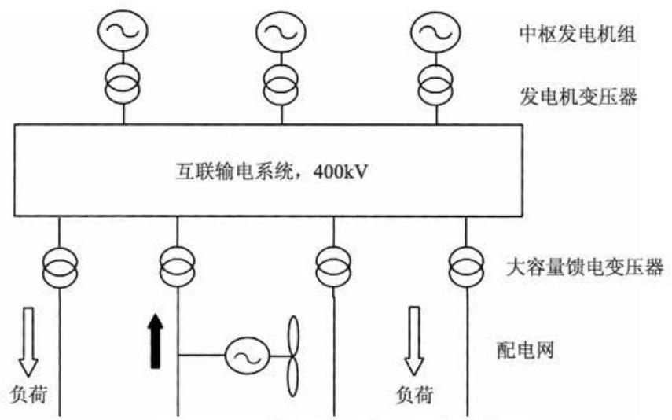
图 10.1 典型大型公用电力系统
大容量供电变压器从传输网络中吸收电能, 并将其供给低压侧配电网。实际情况因国家而异，初级配电电压可以高达 150kV。在通常情况下，配电网在大容量供电变压器和负荷之间呈放射状采用单路径相连。在负荷较高的城区，配电网使用大型电缆和变压器。因此，具有较大的容量。在农村地区，用户负荷较小，配电线路只需有限的容量来传输电能就能将电压维持在所需范围内。小型风力发电场 (分布式发电)常常连接到农村架空的配电网中, 且这些电路的设计往往防止电压的升降而不是传导热限制，这也严重限制了这些电路对风力发电接入能力。
10.1.2 配电网¶
配电网的传统功能是将电能从传输系统向用户输送电能。这必须做到最低限度的电损耗, 并保证电能质量。电压降低与电流成正比, 电路中串联损耗与电流的平方成正比。为了保证能进行恒功率输出, 电流必须保持较低的值, 这就意味着电网电压必须很高。但是由于绝缘材料成本, 高压发电设备 (如导线、电缆和变压器) 是非常昂贵的，因此，选择适当的配电网电压等级是经济性选择的结果。
图 10.2 是一个典型的英国配电系统的示意图, 大部分国家都有相似的网络。 从相互连接的输电网中获取的电能经变压器降压至主配电电压 (图 10.2 中为 132kV)。然后，电能通过一段地下电缆和架空线路传送至用户端，大部分家庭或小型商场的用户使用 \({400}\mathrm{\;V}\) (三相连接) 和 \({230}\mathrm{\;V}\) (单相连接) 接收电能。当配电线路中要求传输的电能减少时, 电压等级可以通过变压器进行降低。
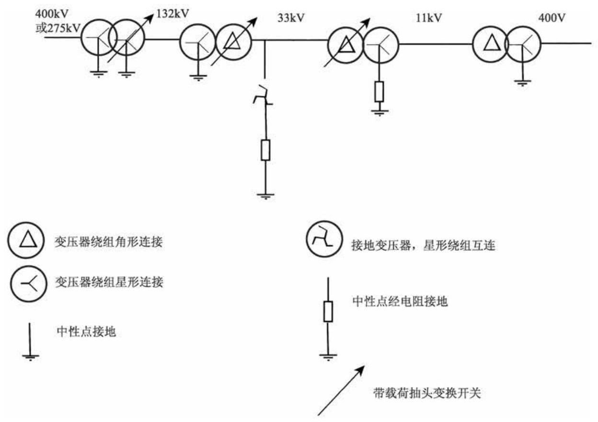
图 10.2 典型的英国配电系统的原理图
虽然在一些农村地区特别是美国, 也会使用长的单相电路, 但是绝大多数的配电线路都采用三相电路。只有平衡的三相电网才适合与大于约 10kW 的大型风力发电机相连。三相变压器绕组可以以星形或三角形方式进行连接,所选择的绕组接法因地而异, 通常都是沿用历史先例。星形连接的优点之一就是可以直接接触变压器中性点, 便于接地。使用三角形连接的绕组, 可以通过接地变压器来创建一个可连接的星点。英国的做法是将每个电压等级的中性接地点都连接在一个点上，而在一些欧洲其他国家的配电网中，中性点相互独立。
电流通过电路会引起电压的变化，这可以通过改变变压器的比率(或分接头) 来进行补偿。11kV/400V 变压器分接头是固定的, 只有当变压器断电时通过手动进行调节。高压变压器具有载荷分接开关, 当载荷电流通过, 它可以自动操作。最简单的控制策略是利用自动电压控制器 (AVC) 使变压器低压侧电压接近设定值 (图 10.3)。当 AVC 工作时, 它通过测量低压变电器母线电压并将其与设定值进行比较, 然后给有载分接开关发出指令来改变变压器的比率。这种类型的控制系统不受风力发电机组对低压电网的影响。即使通过变压器的电流反向, 有功或无功功率从电网的低电压流向高电压，控制系统仍可以比较理想地工作。这是因为电网源阻抗比风力发电机的等效阻抗要小得多，因此，电网电压的分布主要由输电网电压和分接开关控制。电流从低电压侧流向高电压侧时, 某些设计中的分接头变换器具有减小的电流额定值。嵌入式风力发电机要求配电网的变压器具有全反向电流毕竟是比较少见的, 因为一些本地发电量被本地载荷消耗了。
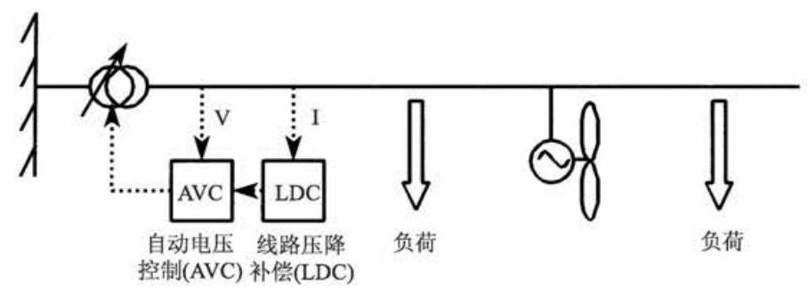
图 10.3 配电电路的电压控制 (沿用 Lakervi 和 Holmes,1995)
在某些配电网中, 利用更加精密的控制方法来控制电路远程点处的电压 (Lak-ervi 和 Holmes,1995)。它通过给 AVC 继电器的本地电压输入网增加一个正比于电压降的信号来实现, 也被称为线路压降补偿(LDC)。LDC 元件测量电路中的电流流量, 并将其应用到一个简单的配电电路模型中 (即电压被控点处电路的电阻和电感)。由此产生的电压再减去测量的本地电压输入, 即为补偿电压。但实际上, 当风力发电机并网后, 线路中的电流会发生变化, 电压被控制点处的有效阻抗也会发生改变，因此，LDC 方法将无法正常运行。LDC 有时被认为是正电抗合成法，而更复杂的方法——负电抗合成法也未必能在连接配电线路的风电机组中正常运行 (Thomson, 2000)。
10.1.3 发电和输电系统¶
电力传送系统用来从发电系统向负载传送大容量电能。在欧洲, 它们通过互联电网运行在电压等级为 \({220} \sim {400}\mathrm{{kV}}\) ,在一些大国 (如美国和中国) 要上升至 765kV。由于其战略上重要性，输电网络正常运行于多个并行电路之间。因此，如果某个电路发生电故障, 那么故障电路就会被隔离出来, 而网络继续正常运行。这会导致电路在正常运行期间利用率非常低, 因此, 在传输网络中, 电能损失较低, 不到传输能量的 2%,而配电网络中损失的电能往往达到 6%。大型风电场(超过 200MW)通过风电场的变压器直接连接至配电网。互联的输电网中的电压主要取决于无功功率电流。因此, 大型风电场无功功率的输出必须按照输电系统运营商由操作人员的需求来控制。
交流电力系统的频率取决于实际产生的电力和负荷需求之间的平衡。如果负荷需求超出了所产生的电力, 那么频率就会降低; 而如果所产生的电力超出了需求,则频率将会升高。对于假定不匹配的供应与需求,频率改变的速度取决于连接至电力系统的所有旋转机械的惯性。独立的电力系统 (如英国需求峰值在 50GW 左右)对频率的控制可以考虑作为单一的节点，但是大型互联系统，如在欧洲大陆以及美国需要考虑电流通过其传输电路从一个地区传向另一个地区的限制。因此, 在每个可控区域, 无论什么时候, 发电与负载必须保持平衡。当风力发电的输出随着风速变化, 其他形式的发电必须改变其输出确保负载能够满足需要, 并且互联电路不会过载。
10.2 风电场电力采集系统¶
大型风电机组被设计成只有当它们连接到稳定的三相交流电网中才能运行。 它们不能孤岛运行电网提供了参考电压和频率，它们被用于控制风力发电机组，以保证发电机系统的稳定性。当风速比较低时, 电网还为辅助设备提供电能。对于固定速度的风电机组来说, 电网提供无功功率, 对感应发电机的运行是很有必要的。而对于变速发电系统, 变流器通过其控制系统与电网频率保持同步。风电机组将电能注入电网，由于风速的变化，电网的稳定性(频率和电压)主要利用大型传统发电机 (火电或水电) 通过其传输网络来供电。
主电路中从风力发电机组到塔架底部所选择的电压等级一般低于 \({1000}\mathrm{\;V}\) ,并且采用国际标准电压等级。在欧洲，线电压通常为 \({690}\mathrm{\;V}\) 。对于大型发电机而言， 这个电压标准通常是非常低的,会产生相当大的电流。例如,一个 \({600}\mathrm{\;{kW}}\) 风力发电机组运行时,若线电压为 \({690}\mathrm{\;V}\) ,则其电流将超过 \({500}\mathrm{\;A}\) 。然而,人们又发现,将风力机中所有的电压限制在 \({1000}\mathrm{\;V}\) 以下是很方便和划算的,因为在很多国家中,如果电压高于 \({1000}\mathrm{\;V}\) ,安全规则会变得非常严格,并且需要采取很多特殊的防范措施, 包括必须为设备提供专用接地电路才能被允许在其上进行工作。采用低电压的更深层次原因包括宽范围的开关设备和柔性电缆选择、承受更高的发电容量, 从而降低发电成本。
然而, 这一低电压要求需要在塔架内或与之相邻 (图 10.4) 的地方安装一台变压器。在早期的一些风电场中, 许多小型风力机被连接到单台变压器上[图 10.5 (a)]。但是随着风力机额定容量逐步增大, 发电机电流也随之增大, 这种方法将会引起低压电缆上过多的电压波动和电能损耗。只有当容量很小的风力机在距离很近时, 采用单台变压器连接多台风力机的方法才会有效。因此, 大型风电机组的每台机组都配置一台变压器[图 10.5(b)]。
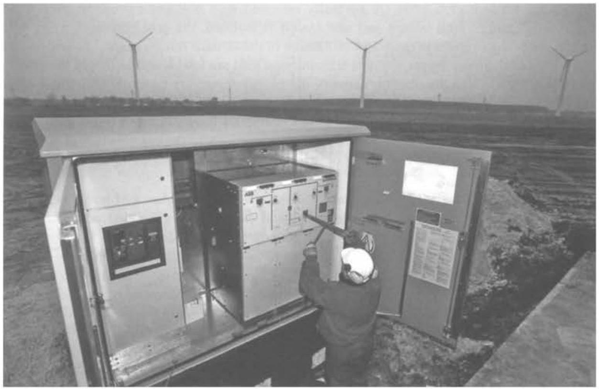
图10.4 1.5MW 风力机系统的变压器和开关设备，右侧为 MV 开关设备， 左侧为 LV 开关设备 (经 NEG MICON 授权, 出自 www. neg-micon. dk)
连接点定义为风电场电力采集系统连接公用配电网络处。公共耦合点是离风电场距离最近的点, 该点位于与其他负载连接 (能连接)的公用网络处。在很多情况下，这些点可能会重合，不过连接点定义的是所有权边界，当风电机组影响电能质量时, 这些点会被认为是公共耦合点。
根据风能资源、当地地形及规划当局的要求, 风电机组在风电场中的布置是固定的。电力采集网络的设计是为了将电能传输至当地的公共电力系统。
风电场电力采集系统的中压(MV)等级通常遵循该地区配电网惯例, 因为采用这种方式,便于获得相应的电缆和开关设备。在英国,电力采集电路通常为 \({11} \sim \; {33}\mathrm{{kV}}\) ; 在欧洲其他地方,则为 \({10} \sim {30}\mathrm{{kV}}\) 。大型风电场可能还包括变压器 (如 33 / 132kV)来提高电压，使得电能可以向远处传输。
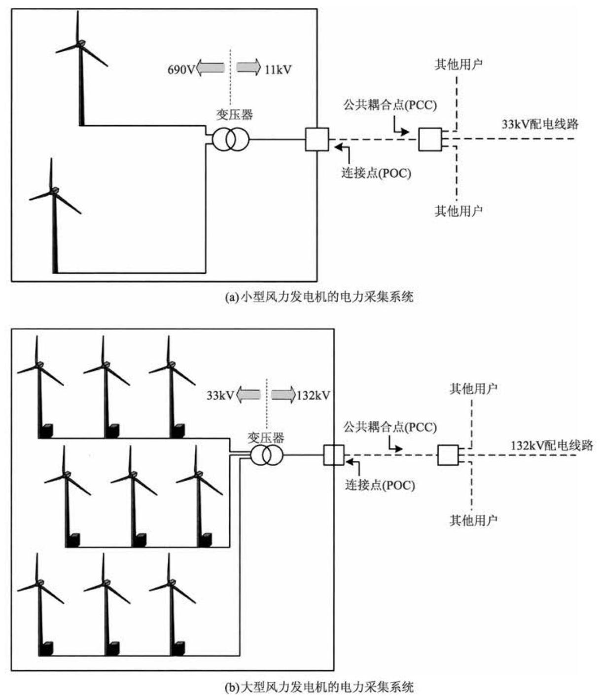
图 10.5
配电网惯例也影响着中压(MV)电路中性点接地方式的选择。在英国，11kV 电路一般都有自己的中性点, 采用直接接地或通过一个低值电阻连接到地表 (典型电阻值为 \({6.35\Omega }\) ,允许 \({1000}\mathrm{\;A}\) 的单相对地故障)。直接接地方式不需要额外设备, 因此, 成本较为便宜, 但是可能会产生很大的接地故障电流, 进而引起较大的跨步电压或接触电势 (ANSI/IEEE, 1986)。相反, 在欧洲其他地方的一些风电场中, 中压电路的中性点并不接地, 该方式允许风电场在单相接地故障下运行, 但此时两相电压上升为原来的 \(\sqrt{3}\) 倍。
除了一两个特别点外, 风电场电力采集系统的设计与任何中压电网的设计基本相同。通常, 在电路中, 它并不需要提供任何备用设备来考虑中压设备的故障。 运行经验和可靠性计算都显示风电场的电力采集系统同单台风力机相比更加可靠，因此，再提供任何备用电路都是不划算的。这也适用于单电路或变压器连接风电场到电网的情况，在这里，备用电路通常不能证明是否有效。如果风电场电力采集系统的某一部分确实发生了故障, 那么损失的收入仅仅是风电场自身的能量输出, 这是很容易估算出来的, 并且通常很小。相反, 如果配电网电路出现了故障, 后果将会是消费者没有电能可用, 此时停止供电所造成的社会损失和商业损失难以计算，但通常认为损失是缺失电力价格的几个数量级。因此，MV 配电网通常没有备用设备，而风电场电力采集系统网络往往是由一些简单的放射状电路组成的，其中放射状电路带有一些用来进行隔离和开关用的开关器件，风力机变压器通过简单的开关设备同放射状的电路直接相连。
在欧洲, 几乎所有风电场内的电力采集电路都是通过地下电缆网络相连的。 这既是出于视觉美观的需要, 也是为了安全考虑。因为在竖起风力发电机组的时候，通常需要大型起重机在现场工作。在世界上其他国家(如印度和美国)的风电场内, 有时也会采用架空的中压电线, 这样可以降低成本。当电缆工作时, 它们的低串联感抗将随电流的变化而引起电压波动, 因此, 在电路上产生了不可忽略的损耗。当风电场项目进行到电气系统详细设计时, 应该准确地估算出风电场的输电能力。根据这些数据, 通过负荷潮流程序, 可以计算风力发电机组在不同输出功率下的电气设备损耗，综合考虑项目周期，并利用现金流折现技术来选择最佳电缆尺寸和变压器额定值。在风力发电上网电价很高的国家中, 为了降低电气损耗来减少成本, 所使用的电缆和变压器的热比值超过了风电场全功率输出时所需要的容量。此外, 采用低损耗的变压器也是可行的。
10.3 风电场的接地¶
电力系统的中性点和所有电力设备的导体机箱及外部导电零件一样都需要接地, 其目的在于如下几个方面:
(1)为接地故障电流提供一个低阻抗通路，满足电力运行(过电流)保护要求。
(2)减少对人和动物的触电事故，包括控制步伐和潜在的接触。
(3)确保安全的释放雷击电流，控制相关电压。
(4)防止对人员和设备可能造成潜在威胁的大电势建立。
在英国，接地用 “earthing” 表示，而在美国，则采用 “grounding”。这两个术语的含义基本上是一致的。
三相电路中的中性点通常是接地的, 每个电压等级都会提供事故电流的接地途径。电气设备的导体机箱也需要接地, 以确保如果发生了内部绝缘故障, 机壳电压也不会潜在地上升。风电机组接地以确保对雷击电流具有低阻抗路径。这三个完全不同的目的通常都通过普通的地和风电场的连接系统来实现。
因为接地具有明显的安全含义, 所以在国家和国际标准中, 对于传统电厂都有许多的手册可用。对于交流变电站接地, 美国标准 (ANSI/IEEE, 1986) 已经被广泛使用, 并且 Charlton 已经写了一个主要针对英国的实际情况的详尽手册 (铜发展委员会，1997)。
然而, 对于接地, 风电场中还有很多特殊的要求。地线通常绵延数公里, 现代风力机易频繁遭受雷击，因为其位置很高，并且因为其常被安置在山顶上而有很高的接地电阻率。因此, 常规的接地方法往往不适用, 需要对其进行特殊处理。 IEEE 推荐标准 (1991) 现在已经不采用, 建议整个风电场的安装应该有一个连续的金属接地系统连接所有的设备, 这包括但不仅限于变电站、变压器、塔架、风力发电机组以及其他电气设备。该标准通常遵循如下方案:将裸导线放置在电力采集电缆沟中作为风电场所有部分的连接器, 同时还作为一个长的水平电极来减小接地系统的阻抗值。
风电场接地系统要求在电网电流频率为 \({50}/{60}\mathrm{\;{Hz}}\) 和雷击浪涌电流上升时间小于 \({10\mu }\mathrm{s}\) 的情况下都有效。尽管 \({50}/{60}\mathrm{\;{Hz}}\) 电流和雷击浪涌电流使用相同的物理接地网络是很传统的方法, 但是接地系统对雷击浪涌电流中的高频部分的响应与在 50/60 Hz 时的响应是完全不同的。
通过图 10.6 , 可以很好地理解风电场接地系统的性能。
每个风力机在围绕地基深度为 \(1\mathrm{\;m}\) 的地下放置一个环形导体来提供一个本地接地(有时被称为平衡地)，并通过竖直的棒插入地下。把风力机地基钢筋连接到这个本地地线网上是很常见的。本地大地用以提供等电位连接, 以避免雷击和电网故障对电流的影响, 同时提供整个风电场接地系统的一个基础。不同的标准, 本地地线阻值也不同。在英国，在连接任何电力电缆或 SCADA 电缆之前，接地阻抗必须小于 10Ω (英国国家标准,1999)。这些本地风力机接地电阻用 \({R}_{\text{ turbine }}\) 表示，如图 10.6 所示。由于风力机接地网络由一个直径为 \({20}\mathrm{\;m}\) 的环和垂直打入的棒组成, 因此, 可以将其看作对地是纯阻性的。
然而,连接风力机与其相邻风力机的长水平电极具有更复杂的特性 (类似于传输线),如图 10.6 中所示,被描述成 \(\pi\) 形等效电路。对地电阻用 \({R}_{\text{ sbunt }}\) 来表示,而串联阻抗由 \({R}_{\text{ series }}\) 和 \({L}_{\text{ series }}\) 组成。 \({R}_{\text{ series }}\) 主要来自地线电阻,而 \({L}_{\text{ series }}\) 来自地电路自感。 在大型风电场的这条长的接地网络上, 串联阻抗是不能被忽略的。很容易看到, 对于作用在风力机上的雷击电流中的高频分量来说, 串联阻抗能将其有效地减小在本地风力机的接地上。即使有 \({50}\mathrm{\;{Hz}}\) 的故障电流,串联阻抗也会产生比期望的小型接地系统更高的接地阻抗, 其中小型接地系统的串联阻抗可以被忽略。在本讨论中, 并联电容与土壤的电离作用被忽略, 尽管它在一些高频率和高电流情况下可能很重要。
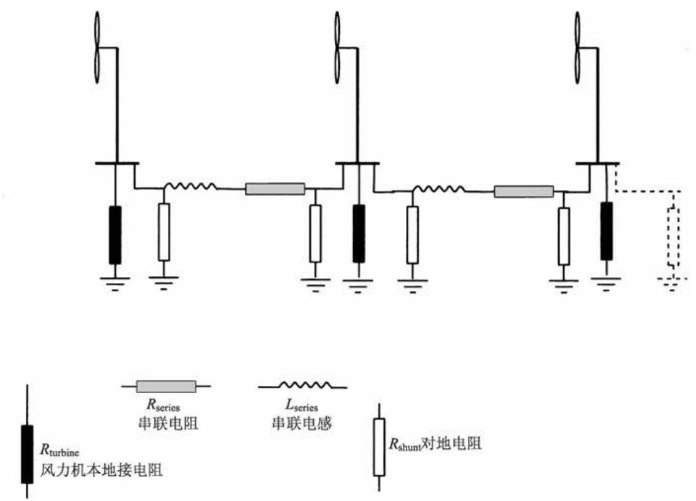
图 10.6 风电场接地系统原理图
风电场接地系统的特性通过现场测量被证实, 表 10.1 给出了英国两个风电场主要变电站上的接地阻抗测量值。
表 10.1 在两个风电场变电站测量的接地阻抗
| 风电场容量/MW | 风力机个数 | 水平接地导体的路长 /km | 主要变电站的对地阻抗 $\left( {{50}\mathrm{\;{Hz}}}\right) /\Omega$ |
| 7.2 | 24 | 6.7 | 0.89 + j0.92 |
| 33.6 | 56 | 17.7 | 0.46+j0.51 |
可以看出,甚至是在 \({50}\mathrm{\;{Hz}}\) 时,对地阻抗几乎是由相等的阻性和感性部分组成 (也就是说,电路到大地的 \(X/R\) 比近似为 1 )。这对风电场接地系统的设计和测试具有很重要的含义。使用传统的主要应对小型、全阻性接地系统的计算方法是不可能的, 并且有必要考虑长导体的效应。采用尖端的计算机程序来进行计算是可以实现的,但需要考虑 \({50}\mathrm{\;{Hz}}\) 以及雷击浪涌电流的特性。类似的简单测试方法,如 Tagg(1964)提出的较为完善的方法,只是测量对地阻抗而给出针对大型风电场的优化结果。确定大型风电场 \({50}\mathrm{\;{Hz}}\) 对地阻抗的唯一有效测量方法是所谓的电流注入测试法。在这个测试中,电流 (典型值是 \({10} \sim {20}\mathrm{\;A}\) ) 将被注入风电场的地极中,测量基于一个真实大地的电位上升值。注入电流的返回路径必须距离风电场很远 (通常是 \(5 \sim {10}\mathrm{\;{km}}\) 以外),以确保它不会影响风电场中的测量,所以通常采用与风电场主电网无连接的电路作为测试电流返回路径。风电场本地接地系统电位相对于远处地电位之间的电位差被测量出来, 并通过一根金属电话线电路传到该地点。 在理想情况下, 电话线电路的通道应该与电网正交以避免产生感应效应。由此可以看出, 这种测试方法执行起来非常困难且费用很高, 因为它需要风电场暂时停止工作，并且还要在电流注入电路的远方终端设置临时的接地参考点。随着通信公司越来越多地应用非金属媒介, 利用电话线电路来提供远程地参考点也变得越来越困难。因此, 对于大型接地网络来说, 串联大量电感的简单测试方法能给出有用结果是值得怀疑的。
10.4 雷击保护¶
人们已经意识到雷击对于风力机是重大的潜在威胁，需要采取合适的保护措施来应付雷击。关于风电机组的避雷保护的权威教程已经在 IEC 61400-24 (2010)中提出。
几年前，叶片是由非导体材料[如玻璃钢(GRP)或环氧木]制成的，并假设这些叶片不包括设备，如叶尖刹车运行的金属元件，并认为对这种类型的叶片提供外在保护是没有必要的。然而, 大量的风电场现场经验已经表明, 如果不安装合适的保护措施，雷击会到达这些材料制成的叶片上，导致灾难性的破坏。如果雷击电流进入到叶片, 并且没有被金属避雷针控制, 那么电弧会导致电压的增加, 如此便会导致叶片发生灾难性事故。如果具有高阻抗的碳纤维导体被用来增强叶片结构，那么附加的防范措施是必需的(Cotton 等, 2000; IEC 614200-24, 2010)。
雷击是一个复杂的自然现象，其通常包括一系列的电流放电。“闪电”常用来描述放电的次序，它采用相同的离子化的路径并可能持续 1s 的时间。闪电的每个单元被称为“一击”。
闪电经常被分成如下 4 类:
(1)向下开始的，负极性和正极性。
(2)向上开始的，负极性和正极性。
一般从雷雨云开始伴随有阶梯先导并传送负电荷到大地的闪电是最常见的 (向下开始的，负极性)。向下的负极性闪电通常由持续几微秒的强电流脉冲组成， 并伴随有持续的几百安培电流。随后, 随着在云层和大地之间初始传输电流的消失, 可能还会有一些重复雷击。在一些沿海地区, 可能会有大量向下开始的正极性闪电，它通常包括一个具有大量电荷传递和特殊能量内容的持续时间较长的雷击。 向上开始的放电通常和很高的物体 (如通信塔) 有关, 此时的雷击具有迥然不同的特性。虽然在这种雷击形式下的最大峰值电流很低 (约 15kA)，但是电荷转移可能会非常高, 进而产生大的破坏电势。目前, 风力机的叶片顶部距离地面有 100 多米，因此，人们对向上的负极性闪电的关注在逐渐增强。向上正极性的闪电目前还很少见。
表 10.2 给出了通常用来表征雷击及其某方面的电势对风力机破坏的参数。 单次雷击产生的峰值电流将超过 200kA，但是中间电流值仅为 30kA。相应的电荷转移值为 \({400}\mathrm{C}\) (峰值) 和 \(5\mathrm{C}\) (中间值),比能为 \({20}\mathrm{{MJ}}/\Omega\) (峰值) 以及 \({55}\mathrm{{kJ}}/\Omega\) (中值)。 这些大范围的参数表明, 风电场或风力机在考虑任何有关雷击保护措施时, 首先要进行风险估价 (IEC,614200-24,2010)。风险估价要考虑风力机的地理位置,因为雷电频率和密度都随着地理及地形的变化而变化。
表 10.2 雷击对风力机各种方面的影响
| 参 数 | 对风力机的影响 |
| 峰值电流/A | 导体发热，冲击影响，电磁力比能/(J/Ω) |
| 导体发热，雷击效应电流上升率/(A/s) | 输电线感应电压, 闪络, 冲击影响 |
| 长期电荷转移/C | 弧形连接处破坏或其他弧形地点 (如轴承损坏) |
表 10.3 列出了一些雷击破坏发生频率的历史数据(Cotton 等，2000)。虽然风力机设计和雷击保护系统都在此期间得到快速的发展，但这些数据确实表明了雷击频率的范围。表 10.3 中显示的大量故障是由于间接雷击影响了风力机和风电场的控制系统。一般来说, 风力机的大部分故障都是由控制系统和电气系统引起的,但是叶片损害所带来的维修费用和风力机可用性损失是最大的,并因此减少了风电场的收入。
表 10.3 风力机雷击损坏频率(Cotton et al., 2000)
| 国家 | 时 期 | 风力机年 | 雷击故障 | 每 100 台风力机年故障数 |
| 德国 | 1991~1998年 | 9204 | 738 | 8.0 |
| 丹麦 | 1991~1998年 | 22000 | 851 | 3.9 |
| 瑞典 | 1992~1998年 | 1487 | 86 | 5.8 |
图 10.7 给出了 4 种通常用来保护叶片免受雷击的技术。这些技术的主要差别是看其是使用一个受限数目的接收器来吸收雷击 (类型 A 和 B), 还是试图保护整个叶片 (类型 C 或 D)。类型 A 显示了在顶端使用一个或两个接收器的情况下， 叶尖刹车的钢制控制线可看作下部导体。对于叶片上没有可移动叶尖的类型 B, 则需要安装一个附加的导体。尽管在实际中牢固连接一个合适的导电路径到前缘是非常困难的，类型 \(\mathrm{C}\) 在前缘和后缘均安装有下部导体。类型 \(\mathrm{D}\) 则在叶片两侧都使用了导电网。雷击的主要破坏机制是雷击电流在叶片内部空气中形成电弧, 电弧产生的压力冲击波可以使叶片爆裂，轻者也会产生叶片结构的破裂。因此，为了有效地保护叶片，将雷电直接引到保护系统上，进而将其沿叶片径向引到横截面积足够大的金属导体内是非常必要的。
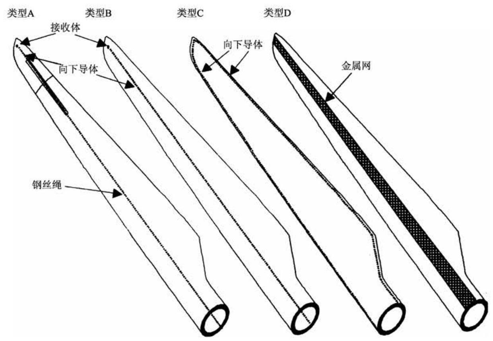
图 10.7 叶片雷击保护方法 (经 DEFU 的 R. Sorenson 博士允许, 出自 Cotton et al., 2000)
日常维护经验似乎可以说明对 \({20}\mathrm{\;m}\) 长的叶片使用叶尖接收器是有效的。对于大型风力机只有有限的有效数据, 但是在这些长叶片风力机中, 仅凭叶尖接收器能否提供有效保护仍然是个疑问。
一旦雷击电流被引导至叶片根部, 这里仍然存在如何确保其安全通过塔的外部进而到达地面这个问题。这并不简单, 因为电流必须在不损坏机舱内发电机和敏感控制设备的前提下经过叶片、轴和偏航轴承最后到达地面。关于雷击电流通道如何损坏风力机轴承在 IEC 614200-24 中已经作出了概括。一般大型、重载轴承不可能受到非常严重的破坏, 即便它们的使用寿命可能会下降。至今在大型轴承周围还没有有效的雷击电流分流方法, 因为轴承本身就是一个最小的电感路径, 即高频电流最理想的路径。
控制和电气系统通过将风力机分为不同的区域来防止雷击, 区域的划分取决于是否与闪电有直接的连接和区域内的电流幅值, 以及预测的电磁场幅度 (IEC, 614200-24)。每个区域部分都被保护, 以抵抗雷击的预期影响。对电气和控制系统的主要损坏途径是直接传导和磁耦合, 而主要的保护措施是具有良好的连接、有效的屏蔽和在每个区域的边界处采用恰当的浪涌保护装置。
10.5 风力发电和配电网之间的 连接¶
配电设备有义务使配电网能够给用户提供质量满意的电能。虽然通用的欧洲标准是基于英国的标准 EN 50160(2007)，这个标准文件给出了公共配电网络所需要的电压特征,但是不适用于排放量受到限制的电网用户 (如风电机组和风电场)。
风电机组在配电系统上的主要影响如下:
(1)慢(或稳态)电压波动。
(2)快速电压变化(导致闪变)。
(3) 波形失真(即谐波)。
风电机组的运行主要受以下因素影响:
(1)电压不平衡(负相序电压)。
(2)暂态电压波动(电压跌落)。
一个风力发电方案是否能接入配电线路取决于其对其他电网使用者的影响。 同理, 任何负荷能否接入配电线路也取决于此。考虑稳态电压波形时通常假定电网负荷最小时发电量最大和电网负荷最大时发电量最小。这里有非常严谨的假定, 能够确保电压变化不超出稳态电压极限。然而, 它们确定风电场的输出经常能够被输出到电网中(除了在网络发生故障时)。风电运营商和电网之间会达成约定, 在电网负荷较低或电网异常时断开某些风力机, 在这种情况下, 就允许更大容量的风电场接入电网。但是, 限电的风险会传递到风电运营商。
在 \({11}\mathrm{{kV}}\) 的电路中允许的电压变化比较小 (通常为 \(\pm 1\%\) 或 \(\pm 2\%\) )，因为任意电压变化量直接通过固定抽头式变压器传向用户。相反，33kV 和 \({132}\mathrm{{kV}}\) 的电路中允许操作的电压范围较广 (上升至 \(\pm 6\%\) )，因为负载开关的自动转换为电网提供了较小的电压, 因此, 用户可在高压网络中补偿变量。所以, 通常发现只有非常有限的风电容量能够连接至 \({11}\mathrm{{kV}}\) ，由于电路的高阻抗及来自发电机的相对较大电流能够导致电压不可接受的变化。决定风电场大小的可能是连接在配电网络上的具体点, 需要经过一系列的基于具体项目数据的计算。表 10.4 给出了一些经验表明可能连接的最大容量的指导。表 10.4 假定风电场是由许多风电机组构成的, 并且连接评估是被电压上升影响激励的，而不是靠单一大型风电机组发出的电能质量。
表 10.4 风电场配电网络的可能连接处
| 连接的位置 | 风电场最大容量(MW) |
| 11kV 电网的输出端 | 1~2 |
| 在 ${11}\mathrm{{kV}}$ 母线上 | 8~10 |
| 在 ${33}\mathrm{{kV}}$ 电网的输出端 | 12~15 |
续表 10.4
| 连接的位置 | 风电场最大容量(MW) |
| 在 ${33}\mathrm{{kV}}$ 母线上 | 25~30 |
| 在 ${132}\mathrm{{kV}}$ 电网的输出端 | 30~60 |
对于连接到小型配电网的相对容量较大的风电场, 可能涉及必要的计算。因此,一些国家采取评估风电场容量 (MW) 与无风电机组接入时对称短路容量 (MV - \({\mathrm{A}}^{1)}\) ) 的比率的方法来确定是否能接入电网,这个比率有时也称为短路比,其典型范围值为 \(2\% \sim 5\%\) ，具体取值的大小取决于研究分析和经验(Gardner,1996)。但是, 这样简单的规则局限性太大, 可能将应该入网的风电场排除在外, 或一味地增强配电系统。表 10.5 给出了英国成功商业化运行的两个高短路比的大型风电场。 两个风电场均已成功运行了多年，但必须指出的是，这两个风电场所含的风力机数量都很多, 所以单台风力机对配电网影响很小, 而且它们都与没有其他用户仅仅通过安装自动抽头式变压器的 \({33}\mathrm{{kV}}\) 线路相连。
表 10.5 两个大型风电场(恒速感应发电机)的网站装机容量与连接短路水平的比率
| 网站装机容量/MW | 风电机组的数量 | 连接短路水平/(MV・A) | 风电场容量与短路水平的比率/% |
| 21.6 | 36 | 121 | 18 |
| 30.9 | 103 | 145 | 21 |
图 10.8 给出了在同一个地方风电场电压波动随输出的变化的计算值。风力机的额定电压为 \({690}\mathrm{\;V}\) ,每台风力机都有自己的 \({690}/{33}\mathrm{{kV}}\) 变压器。 \({33}\mathrm{{kV}}\) 曲线指的是风力机与公共配电网的连接点处的电压。当风电场输出为零时,系统电压基本上为配电网轻载时的额定值。随着风电场输出的增加, 电压逐渐升高, 但是一旦达到额定功率值，发电机所吸收的无功功率就会快速增加，因此，电压开始跌落。 在 140% 输出功率时,负荷潮流运算不能收敛”) 表明电网电压有可能崩溃。虽然这种过载不可能发生在风力机数量很多的风电场中, 但是单台风力机可以产生高达其额定输出 200% 的输出，因此，当大型风力机接入弱电网时，这种电压不稳定现象可能会非常严重。
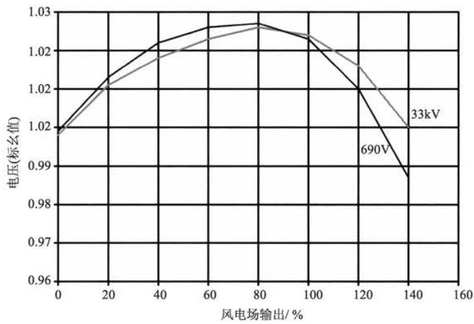
图 10.8 风电场电压波动随输出功率的变化曲线 (发电机电压为 \({690}\mathrm{\;V}\) ,并网电压为 \({33}\mathrm{{kV}}\) )
1)电网的“强度”由短路或故障的严重程度描述，短路电流水平是故障前电压和三相对称故障发生时的电流流动。显然,这样的电流和电压的组合可以不同时出现故障的水平 (以 \(\mathrm{{MV}} \cdot \mathrm{A}\) 表示) 是一个有用的参数, 它让我们及时了解电路传递故障电流和抗电压变化。每单位故障水平与源阻抗的大小成反比 (Weedy 和 Cory, 1998)。
10.6 电力系统研究¶
为了评估大型风电场对电网的影响，同时为了确保电网状况允许风力发电机组有效运行，通常需要进行电力系统研究。过去常采用简单的手工计算，而现在可以利用复杂的计算机程序进行处理，通常针对大型风电项目。
负荷潮流 (或潮流) 程序将电网拓扑和电线、电缆及变压器阻抗作为输入。根据电压、有功和无功潮流及损耗, 利用用户负荷和发电机输出来计算电网的稳态性。通常假定系统是三相对称的。对风能应用来说, 良好可变抽头变电器模型和风力发电机有效表达的负荷潮流模型是非常关键的。简单负荷潮流只能给出电网的瞬态分析，而某些商业化的程序则允许利用每日负荷和发电机情况进行多次反复运算, 并能显示一段时间内的电网性能。
故障计数器计算网络中任何瞬间的故障电流。不管是平衡还是不平衡, 故障都一目了然。其运用对称分量法 (Wagner and Evans, 1933) 来计算不平衡短路对电力系统的影响。平衡和不平衡故障都可以计算。故障计算器用来检查风力发电机组接入,通常需要感应发电机或电力电子变换器的比较理想的模型。故障计算器将故障发生后，特定次数的故障流和电网电压作为输出，一些更为复杂的程序用来分析方法和评估潮流延迟，但主要的分析运用于稳态下的方法。
暂态稳定性程序可以分析风力发电机对电网中扰动干扰的响应特性。因为运算是基于基频相量采用综合算法来计算电网情况是如何随时间发生变化的, 所以假定电网三相平衡。传统的暂态稳定性程序用来估算同步发电机的攻角稳定性。 因此，要得到实用结果风力发电机的理想模型是非常必需的。
在更为复杂的工具中还有电磁程序, 它与前述的程序不同, 不需要假定基本频率波形是理想的，所以获得感应发电机和电力电子变换器的更准确表达式是可能的。这些程序使用详细的时域仿真，允许对电力电子变换器产生的失真波形进行重建,并且允许对诸如闪电所引起的高频瞬时值进行检测。电磁仿真可以用来检测电力系统中几乎所有的情况, 但检测起来相当复杂。电磁仿真并不是专用于风电场设计,但是仅用于分析一些特殊问题。
1)负荷潮流程序收敛的失败不能准确预测电压崩溃，但是一个该系统可能不稳定的迹象。
当然, 还有很多更为专业的运算方法和相关工具, 包括概率潮流、最优潮流、谐波潮流以及各种接地标准。但是，这些方法和工具的应用需要专业知识，因此，通常并不应用于小型风电场项目。
10.7 电能质量¶
电能质量是用来描述输送到用户端的电能达到相应的标准, 以保证终端用户设备正常运行的术语 (Dugan, McGranaghan 和 Beaty, 1996)。虽然在很大程度上受到配电网络和传输网络的影响,但它基本上是以用户为中心的量度标准。风电机组以及其他形式的分散发电能够通过使提供给用户的电压失真降低电能质量, 而且也可以通过提升网络的短路水平和电压稳定性来增加电能质量。
电力供应存在很多方面(如电压、电流和频率)偏离特定值。范围从瞬时和短期变化 (如电压暂降和暂升) 到长期波形失真 (如谐波、失衡)。供电的持续彻底中断通常被看成电网可靠性问题而非电能质量问题。在英国，持续超过 \(1\mathrm{{min}}\) 的供电彻底中断被记录下来，并将其看作区别于电能质量由配电设备提供的电能供应的一项指标。电能质量重要性的不断增加主要是由于用户载荷中敏感设备，如基于计算机的控制器和电力电子变换器的使用数量的增加, 另一个重要原因就是人们对于由电力系统所产生的干扰导致设备不正常运行所引发的商业问题的清楚认识。
对于风力机来说, 电能质量问题特殊重要, 因为接入到具有高源阻抗和高密集用户的配电网中的单台风力机的容量可以做得很大,有的高达 2MW。对于使用电力电子变换器的变速恒频风电机组，其电网电压的谐波畸变问题应该予以重视，并且为了避免过度的电压瞬变，必须管理恒速型风力机接入电网情况。
正常运行时风力机输出连续变化的功率。高频功率的变化通常是由湍流、风切变、塔架阴影以及控制系统运行模式所引起的。这些影响可以导致在某一个频率(大型风力机通常是 \(1\mathrm{{Hz}}\) 左右)下的周期性功率波动，叶片以此频率掠过塔架， 并将这种波动叠加于由风速变化所造成的缓慢功率变化上。此外, 也可能有由风力机动力学所产生的更高频率 (约为几赫) 的功率变化。风轮变速运行方式的优点是许多更快的功率变化不会被传递到电网中, 而是被风轮的飞轮作用所消除。但是运行于恒速模式的低转差感应发电机时会导致输出功率基于转子旋转频率 (1P), 和叶片通过频率 (3P)一样的周期性变化, 以及电网电压基于这些频率的周期性变化。大型感应发电机连接至较弱的网络可能也会导致短暂的电压改变。
并网风力机不降低配电网的电能质量是最基本的要求，否则配电部门将拒绝风力机接入电网并连续运行。除国际标准所描述的由于连接至任意一个设备所导致的电压变化限制(如电力网络协会，1989)之外，风力发电机组对电能质量影响的特殊重要性已经在 “连接至风电机组电能质量网络特征的测量与评估” (IEC 614200-21,2008)标准中被承认。这个标准列出了电压质量指示器，应该由风力机制造商提供从而描述风力机输出的电压质量。同时还详细说明了所测试流程, 需要来决定风电机组对于网络电压下降的响应，如同运行电气控制和电网保护系统一样。
IEC 614200-21 所考虑的几个主要方面如下:
(1)电压波动。
(i) 连续运行下的闪变系数，它是网络源阻抗相位角和年平均风速的函数。
(ii) \({10}\mathrm{\;{min}}\) 和 \({120}\mathrm{\;{min}}\) 周期内风力机启动的最多台数。
(iii)启动时的闪变阶跃系数和电压阶跃系数, 这些因数是网络源阻抗相位角的函数。
(2)谐波电流和内部谐波。谐波电流, 上升至 50 次, 在连续运行模式下, 但不包括在风力机启动时的谐波。
(3)电网电压下降响应。
(4)有功功率控制。
(i) 最大输出功率 \(({10}\mathrm{{min}}\) 平均值、60s 平均值和 \({200}\mathrm{{ms}}\) 平均值)。
(ii) 风力机启动后的光滑度限制。
(iii) 有功功率设定点控制, 支持电网频率。
(5)无功功率的容量和设置点控制。
(6)电网保护。过压/欠压的设置和频率延迟以及重连时间。
在通常情况下，将有大量(10 台以上风电机组)发电机的风电场连接到电网时, 主要电能质量问题是电压的稳态上升, 而对于弱电网单台大型风力机的限制因素通常是暂态电压变化。在涉及和研究大型风力发电机组时电能质量问题是须考虑的重要因素, 也是变速运行方式和主动失速控制中逐渐增加的一个因素, 这两点减少了功率输出的暂态变化。
图 10.9 说明了怎么看待与风力机相关的电能质量问题。图 10.9(a) 显示了源于输送和配电网络中产生的多种影响, 它们可以影响风力机所连电网电压。
电压暂降是输/配电网中故障所引起的供电电压下降到 10%~90% 标称电压并持续 \(1\mathrm{{min}}\) 。需要特别注意，因为当发电机断开载荷时，电压暂降会导致恒速风力机超速，进而可能导致对无功功率的大量需求，更进一步也会使电网电压降低。 降低的电压可能还会导致接触器断开, 压敏控制电路发生动作。
电压暂升 (电压升高超过 1.1 倍基准电压) 不太常见, 对风力发电机组也不是主要问题。因为电视和计算机的供电，许多电力系统中的谐波电压失真都在增加。 在英国，通常很容易发现一天的某个时候电压失真超过了电网设计者(电力协会， 1976)认定时的合理界限。谐波电压失真会导致风力发电机的损耗增加, 还会干扰控制系统和电力电子变流器的谐波电流性能。人们习惯于在恒速感应风力发电机上使用功率因数补偿电容器, 当然, 这对谐波电流和电网上其他设备间感抗谐波共振的电势会有低阻抗。由于对旋转着的感应发电机进行不同相重合闸存在可能性, 所以这种暂态中断 (由配电网的自动重合闸装置产生的) 可能具有很大的危害性, 会产生一个电压。通常采用快速母线断开保护来防止这种情况的发生, 所以一且供电中断风力机就会变为独立运行。
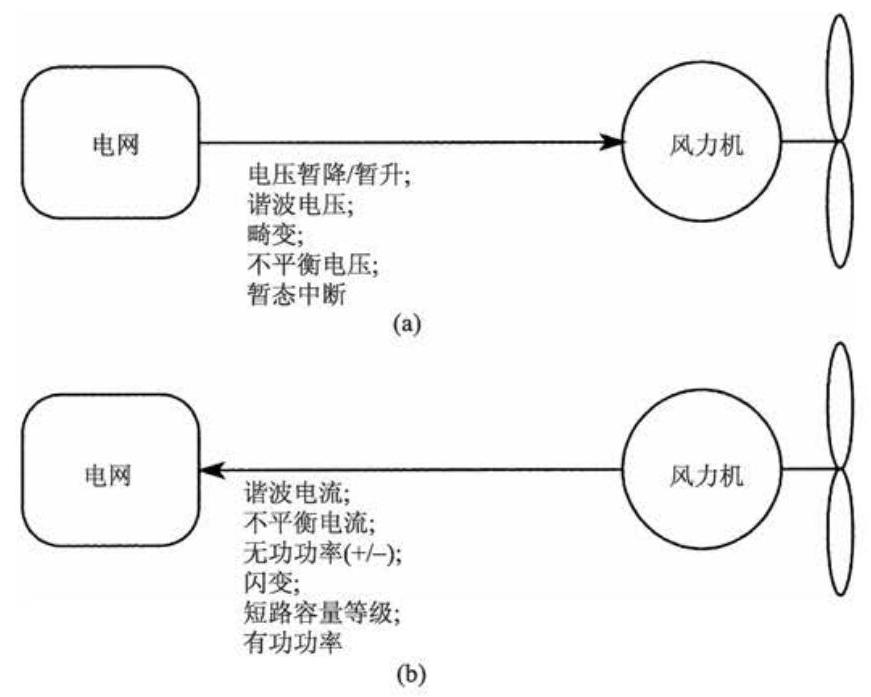
图 10.9 电能质量问题的原因
电网电压不平衡也会增加旋转感应发电机的损耗并产生转矩脉动。除非在设计感应发电机时考虑到了不平衡供电的情况，否则电网电压不平衡还会导致功率变流器向电网注入不期望的谐波电流。电压不平衡通常被描述为负相序电压。利用对称分量法 (Weddy and Cory, 1998), 三相电压矢量分成一个被描述为平衡 (正相序) 和不平衡运行 (负相序) 的集合。
图 10.10 显示了感应发电机的负序等效电路 (Wagner and Evans, 1933)。可见, 在正常运行 (也就是当滑差接近零) 时, 有效叶轮阻抗相对于负序 (不平衡的) 电压仅为 \({R}_{\mathrm{r}}/2\) 。因此,供电电压任何轻微的不平衡都将产生很高的不平衡电流。在英国，对连接于 \({11}\mathrm{{kV}}\) 配电网相的风力机来说，已发现这是一个特殊的问题。同样的问题存在于农村 \({11}\mathrm{{kV}}\) 公用供电网,用它来连接变压器和两相之间的小支线,并且只给农场和其他小负载供电。这些单相连接会导致电压不平衡 (高达 \(2\%\) 的电压不平衡很普遍),所以连接到 \({11}\mathrm{{kV}}\) 三相主电路的风力机中会产生很大的不平衡电流 (高达 \({15}\% \sim {20}\%\) )。当风力机控制系统检测到不正常的不平衡电流时就会停机。在晚上，风电场热负荷自动启动以利用较低的电费，误动作现象就会经常发生。
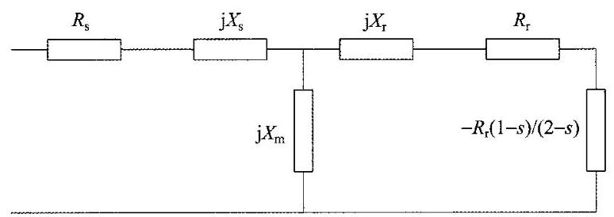
图 10.10 感应发电机的负序等效电路
( \(s\) 代表转差,对发电机来说为负; \({R}_{\mathrm{s}}\) 为定子电阻; \(\mathrm{j}{X}_{\mathrm{s}}\) 为定子阻抗; \(\mathrm{j}{X}_{\mathrm{m}}\) 为励磁阻抗; j \({X}_{\mathrm{i}}\) 为折算到定子侧的转子电抗; \({R}_{\mathrm{r}}\) 为折算到定子侧的转子电阻)
不平衡的单相电压失真也能导致风力机变速的困难。变速发电机系统网络侧的整流器将直流电压合成三相交流电压。这个三相交流电压通过耦合电抗注入电流连接至电网。因此，如果电网电压失真或者其他三相电压不平衡，不平衡电流可能会注入，并且电流波形失真。其中的一个解决方法是使用独立的设备来检测电网每一相电压 (即每一相的独立相锁相环)。
图 10.9(b) 说明了分布式风力发电机组是怎样对配电网产生干扰，从而造成电能质量的降低。因此，利用电力电子变流器的变速风力发电机组可能会向电网注入谐波电流。同样，不平衡运行模式也会导致负序电流注入电网，从而导致电网电压不平衡。前面已经介绍过, 变速风力发电机组可以在输出有功功率的同时产生或吸收无功功率, 而且根据电网、载荷或发电机细节, 这样很可能会导致不期望的稳态电压波动。电压闪变是指由于叶片掠过或受其他暂态影响而引起的电压动态变化现象。恒速风力发电机组将增加电网故障率水平并影响电能质量, 这就使得必须对其进行改进。风力发电机组和大型工业负荷的电能质量问题之间有相当大的相似性, 两者通常采用相同的标准。
10.7.1 电压闪变¶
电压闪变描述了电网电压的动态变化，导致闪变发生的原因可能是风力机或载荷变化 (Bossanyi, Saad Saoud 和 Jenkins, 1998)。“闪变”这个术语最初用来描述电压波动对白炽灯亮度的影响，以及给用户带来的干扰(Mirra，1988)。人们对于光强度改变的敏感度依赖于频率, 图 10.11 表明在实验室测试得到的正弦电压幅值变化曲线对观察者来说可能是显而易见的。可见,人眼对于 10Hz 左右的电压变化最敏感。各种国内和国际上的电压闪变标准都基于这种曲线。将电压闪变作为可接受的电网动态电压变化的指标不太常用, 因为评价是在基于实验测得的白炽灯变化对人的眼睛和大脑的影响上进行的。当然, 如果把白炽灯换成其他的灯,结果会有不同的反映, 况且把闪变作为测量干扰的方法也没有很明确地考虑到电压变化对敏感设备的作用效果，如计算机。尽管如此，闪变标准通常用来表征暂态电压改变，对分布式风力发电来说也相当重要，分布式风力发电的特点如下: ①经常使用相对大型电厂的独立项目，②能频繁启动和停止，③从波动的电源得到连续变化的输入功率。
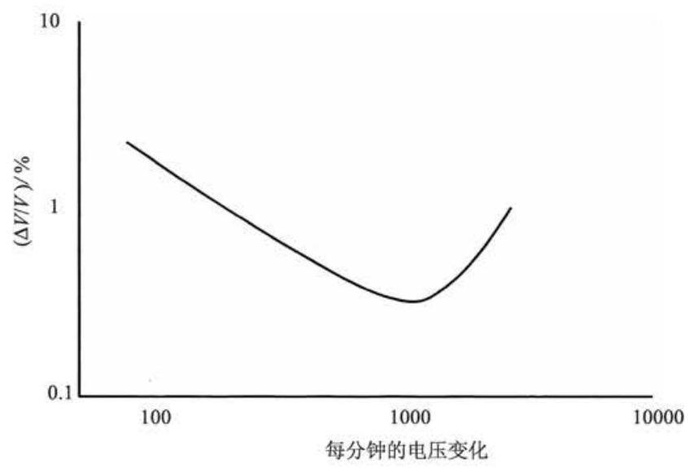
图 10.11 频率对可感知正弦电压变化的影响
评价闪变的一个常用指标是 \({10}\mathrm{\;{min}}\) 测量时间的短闪变值 \({P}_{\mathrm{{st}}}\) 。 \({P}_{\mathrm{{st}}}\) 值是 \({10}\mathrm{\;{min}}\) 测量时间多次顺序测量值, 它是利用基于人眼所能感觉到的不舒服的光波动的算法而得到的,如图 10.12 所示。图 10.12 表明了闪变是怎样测量的。 \({P}_{\mathrm{{st}}}\) 正比于电压变化幅值, 这当然也包括图 10.11 中所指出的频率依存性。尽管 IEC 614000-21 没有对 \({P}_{\mathrm{{st}}}\) 和 \({P}_{\mathrm{{lt}}}\) 限制做任何区分 (IEC,61400-21),但是 \({P}_{\mathrm{{lt}}}\) 是通过将 12 个 \({P}_{\mathrm{{st}}}\) 值的和求均方根得到的长闪变值,其时间长度超过 \(2\mathrm{\;h}\) 。
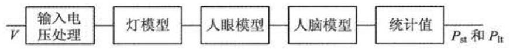
图 10.12 闪变测量原则
如果一定数量的风力机受到不相关的一系列转矩的影响,那么它们的功率输出和对电网闪变的影响就会减弱, 其关系如下:
式中, \(n\) 为发电机台数; \(P\) 和 \(p\) 分别为风电场和风力机额定功率; \({\Delta P}\) 和 \({\Delta p}\) 分别为它们的功率波动幅值。
有证据(Santjer 和 Gerdes, 1994)表明，在某些场合风力机会同步运行，此时电压变化就会逐渐增大，闪变也会线性增加。造成同步运行的原因还不清楚，但被认为可能是由于电网电压变化导致的电力系统内部的相互影响。然而，英国湍流多的大多数站点的经验表明，任何同步运行只持续很短时间不会受到风速改变的干扰。近海处湍流较低时的情况不再是这样。
国内和国际标准给出了配电网的闪变的可允许范围。Engineering Recommendation (电力协会,1989)的第 28 页明确指出,无论何处的电网, \({P}_{\mathrm{{st}}}\) 绝对最大值为 1.0,而 \(2\mathrm{\;h}\) 内 \({P}_{\mathrm{{lt}}}\) 为 0.6 。然而,电压幅值为 \(1/6 \sim 1/8\) 时,受到投诉的危险性就会增加。当 \({P}_{\mathrm{{st}}}\) 和 \({P}_{\mathrm{{lt}}}\) 的值接近限定值时,就应该引起特别注意。在同一篇文章中提出的基于 \({P}_{\mathrm{{st}}}\) 的近似评估方法要求 \({P}_{\mathrm{{st}}}\) 不能超过 0.5 。英国标准 EN 50160 不太严格地指出一周内在 95% 的时间里, \({P}_{\mathrm{{lt}}}\) 不能超过 1,但是这个标准不包括嵌入式发电。Gardner (1996) 从很多公用工程中获知 \({P}_{\mathrm{{st}}}\) 的限制范围为 \({0.25} \sim {0.5}\) 。
10.7.2 谐 波¶
只有变速风力发电机组向电网注入大量的谐波电流。恒速风力发电机组，尤其是那些带有功率因数补偿电容器的风力发电机组, 改变了配电网的谐波阻抗, 而且在有些情况下可能会产生共振电路。在同时装有恒速和变速风力发电机组的风电场, 这种情况更是很严重。
晶闸管软启动 (图 10.13) 通常用来连接恒速风力机所用的感应发电机。软启动的工作方式是首先在电压后半周期触发晶闸管, 然后导通角提前 (经过几秒钟) 直到整个电压波形施加给发电机。因此, 电网电压被逐步加到发电机, 控制发电机吸收的电流, 以减少电网电压变化。工作时随着晶闸管触发角的改变, 这些装置产生了多种谐波。通常, 软启动单元只在感应发电机连接时工作几秒钟, 这么短的时间谐波几乎不会造成伤害，所以可以被忽略(IEC，61400-21)。如果反并联晶闸管不被旁路，而是持续工作，则就需要对谐波电流进行评估了。为了减少所施加电压和在低发电机输出功率时的铁损, 推荐持续使用软启动单元。但是和尽力解决谐波随触发角的变化而变化这个问题存在的难度一样, 施加到发电机上的电压变化会改变传动链的动态特性也同样存在潜在问题。
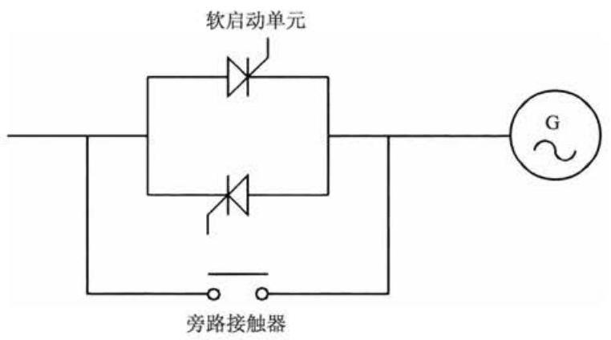
图 10.13 感应发电机的软启动单元 (只显示单相)
现代变速风力发电机组通常使用基于 Graetz 桥拓扑的网侧电压源变流器 (图 10.14)。它们使用开关频率为几千赫兹的绝缘门极双极性晶体管 (IGBTs)来形成正弦波，因此，可以消除低次谐波(低于 19 次)。所使用的开关技术有很多种，从比较参考信号和触发信号的简单载波调制技术到基于两轴坐标变换的空间矢量技术 (Anaya-Lara et al., 2009), 所使用的开关技术各不相同。快速开关相对于传统的线换向变流器大幅度减少了低次谐波电流,但是在开关频率周围 \(\left( {1 \sim 4\mathrm{{kHz}}}\right.\) 区域) 装置的输出电流具有较大的能量。图 10.15 所示为 PWM 整流器的高频谐波。尽管这些高频电流相对容易被滤除,但是其可能会影响耦合电抗 \({X}_{\mathrm{c}}\) 的选择,耦合电抗器可以作为滤波器的一部分用来滤除开关频率周围的谐波电流。
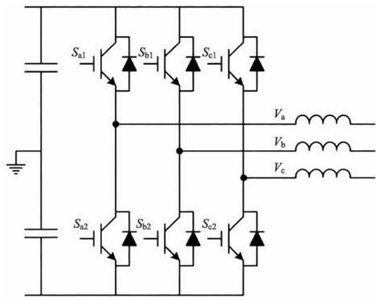
图 10.14 六脉冲两电平 IGBT 电压源变流器
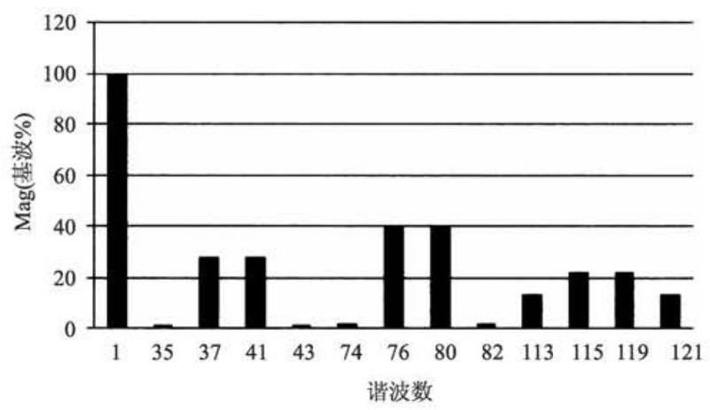
图 10.15 典型的 PWM 整流器的三相电压的谐波频率, 载波频率 \({1950}\mathrm{\;{Hz}}\) ,第 39 次谐波 (Mohan 等,2003)
10.7.3 并网风力机电能质量特性测量和评估¶
确定风力机的电能质量和预测运行中的风力机的性能并不是那么容易, IEC 614200-21 (IEC, 2000b) 对此提供了指导。对风力机电能质量进行评估存在很多困难, 因为它们的性能取决于以下几个方面:
(1)整个风力机设计(包括空气动力风轮和控制系统)。
(2)它所连接电网的情况。
(3)它运行时的风况。
例如, 只是对被实验风力机终端电压变化进行简单测量是不能令人满意的, 因为测试点处电网闪变的环境水平和源阻抗的 \(X/R\) 值对输出具有显著影响。因此, 为了评价闪变, 制定了一个程序。在这个程序中, 由被测风力机的输出功率组成的电流测量值被用于合成电压变化, 这种电压变化产生于具有确定短路容量和源阻抗的 \(X/R\) 比值的配电网上。如图 10.16 所示,仿真利用了 “虚构电网” 概念,这个概念在标准中被提到。这些电压变化通过闪变算法来计算所测电机对电网可能造成的闪变。实际配电网中在考虑单台发电机安装问题时, 这些测试结果就能按比例反映出实际的短路容量,连接点的 \(X/R\) 值也可以用插值法计算出来。基于假设瑞利风速分布得到的权重因数也被用来提供可用于具有不同年平均风速的站点的闪变系数。
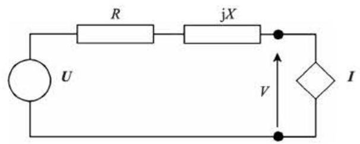
图 10.16 应用虚构电网仿真不同电压等级及电网和电压变化
( \(I\) 为检测电流, \(R\) 为虚构网络电阻, \(\mathrm{j}X\) 为虚构网络感抗, \(U\) 为理想电压源, \(V\) 为同步电压)
IEC 614200-21还制定了风力机在切入风速和额定风速以及双速风力机切换速度时的启动影响评估方法。测量的电流与虚拟电网共同来提供电压时间序列,然后通过闪变算法得出结果。对于变速风力发电机组,谐波电流要测量 \({10}\mathrm{{min}}\) 观察周期。
10.8 电力保护¶
高压电力系统的所有部分都被继电器和断路器保护, 继电器用于检测不正常情况，而断路器用于切断故障线路。有些低压电路采用熔断器保护，熔断器虽然比较便宜,但是不能像继电器和电路开关那样可以控制保护等级。然而,熔断器具有动作快速性的优点, 可以限制能量传递到故障线路。配电网的保护系统首先用于检测由电路绝缘失效所导致的过电流。像空气和固体绝缘击穿这样的绝缘失效会导致两相之间或相对地过电流。这些大电流的持续时间仅允许 \(1\mathrm{\;s}\) 左右,其目的是为了限制以下危险情况的发生:①大电流流入大地阻抗时引起的过电压对人身的危害；② 由破坏性温升和大电流的电磁影响而引起的对设备的危害；③对电力系统稳定性的危害。
风力发电机组和风电场的电力保护都遵循可应用于任何电力设备 (ALS-TOM, 1987)的相同的通用规则, 但是有两点重要的不同。因为风电场通常连接到电力系统周边, 绝缘击穿时的故障电流相当小。尽管从减小危害的角度看这是很好的, 但是缺少这种电流会给快速和可靠的故障检测带来很大的困难。实际上, 某些高压熔断器的设计依赖于使之正常运行的电弧能。因此, 当电弧能很低时, 它们不能可靠地用来阻断小故障电流。其次, 利用感应电机的恒速风力机组和变速风力机组通过电压源变流器与电网相连。感应发电机和电压源变流器都不是故障电流的可靠来源，所以需要用电压和频率感应继电器来检测风力发电机诱致的不正常情况。
图 10.17 显示了当感应发电机终端发生三相故障时的电流。由图 10.17 可见, 发电机中储存的电磁能衰减时故障电流迅速也发生衰减。感应发电机从电网或就地补偿电容器吸收励磁电流时是没有持续故障电流的, 并且终端发生三相故障时导致电压跌落也是不可能的。一些不对称故障 (如两相故障) 可以导致全功率输出电流的 \(2 \sim 3\) 倍的持续故障电流 (Jensen,1990)。但是这种电流通常无法可靠地启动保护继电器。不过, 有必要通过改变电网故障电流, 也就是提供电网电压的就地支持来确保风力发电机组提供的故障电流不会导致配电网继电器的误动作。
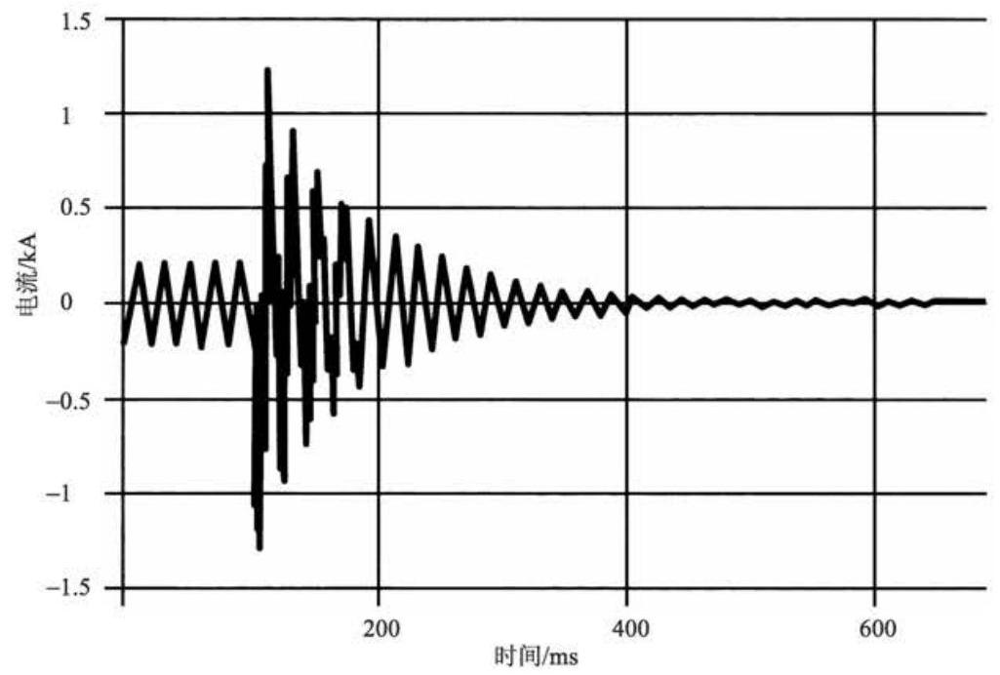
图 10.17 感应发电机终端发生三相故障的故障电流 (带有最小直流偏置相电流)
计算恒定速度感应发电机短路电压的简单的建模方法代表其作为一个单位的电源电压串联至次级瞬态电抗。这是一个简单的方法, 但是给出了一个低初始电流作为感应发电机产生的内部电压可能有点高。
对一个简单的评估来说, 双馈发电机对局部故障的响应能被分成两个阶段 (Kanellos 和 Kabouris, 2009; Morren 和 de Haan, 2007)。在第一阶段(大约 2 个或 3 个周期), 它可以被认为如同操作一个恒定速度的感应发电机, 而不是一个逐渐增长的内电压。特别地, 如果运行是超同步的并且输出功率通过转子和定子电路。在第二阶段, 电流通过转子侧的变流器时受撬杠保护控制作用以及所使用的转子阻抗的限制。
在发电机使用的全功率变流器中, 流向电网中的短路电流是由电网侧的电力电子变流器决定的，在通常情况下，不会超过其满负载电流的 110%。因此，风电机组的全功率变流器能够被近似为额定电流附近的恒定电流源，尽管 IEC60909 (IEC 60909-0:2001)三次建议标称电流应被假定为能够再生的促成变速驱动的故障电流。
故障电流使得所有连接至发电机 (DFIG 和全功率变流器类型) 的变流器取决于变流器的详细设计和其控制系统。因此, 来自厂家的测试数据显示出发电机系统是如何响应短路, 以及电网电压凹陷在故障计算中应该使用构建模型。
风电场和配备有驱动装置的大型工业负荷有许多类似的保护, 这些驱动装置能向电网馈电。出于保护的目的, 把风电场看作将转矩应用于机械轴, 而不是用来驱动机械载荷的大型电气驱动装置的汇集是一个有用的类比。在进行工业装置驱动时, 电气装置的终端电压和频率是由电网条件决定的。配电网提供的可靠故障电流源用来检测绝缘击穿, 同时这种故障电流也有可能来自于旋转的装置。另外, 当风电场和电力系统脱离时, 风电场还具有继续发出异常频率或电压的危险, 这就是孤岛现象, 这种现象对于所有分布式发电方案来说都是要重点考虑的。
10.8.1 风电场和发电机保护¶
图 10.18 是恒速型风电场的典型保护配置图, 其发电机电压为 \({690}\mathrm{\;V}\) , 线路电路电压为 \({11}\mathrm{{kV}}\) 。 \({11}\mathrm{{kV}}\) 电路来自于 \({33}\mathrm{{kV}}/{11}\mathrm{{kV}}\) 角/星连接变压器,其中性点直接或通过电阻接地。 \({11}\mathrm{{kV}}/{0.69}\mathrm{{kV}}\) 变压器也为角/星连接,所以每条 \({690}\mathrm{\;V}\) 电路的中性点可以直接接地。发电机中性点不接地。
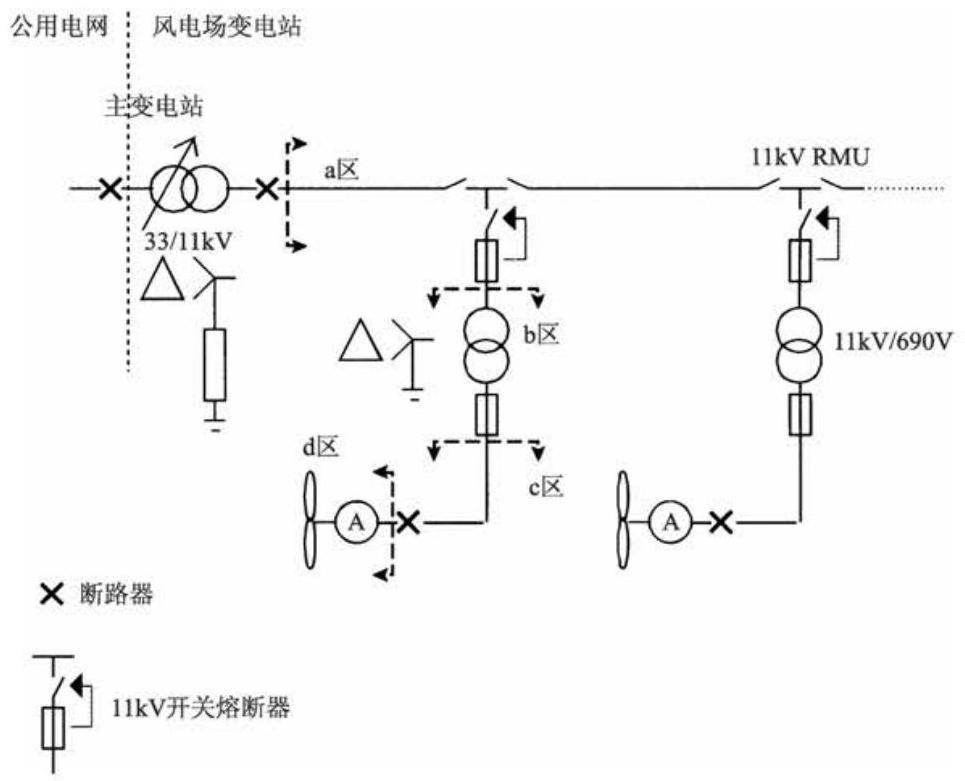
图 10.18 带有 \({11}\mathrm{{kV}}\) 连接电路(RMU——环网主单元) 的风电场保护
在这个网络中有几个保护区域。在如图 10.18 所示的 D 区, 风力发电机组塔架底部安装有用来保护悬空电缆和发电机的 690V 断路器 (通常为图 10.18 所示的塑壳断路器)。
图 10.18 中的 \(\mathrm{C}\) 区是从风力机变压器到塔底柜的 \({690}\mathrm{\;V}\) 电缆。安装在风力机变压器 \({690}\mathrm{\;V}\) 侧的熔断器或另一个塑壳断路器用来保护电缆，如果 \({11}\mathrm{{kV}}\) 线路没有开关, 它还可以作用隔离点用以隔离发电机侧的所有电力线路。在风力机设计中, 塔架底部的配电柜底部引入的主母线是由裸露导线组成的。对这个区域的电力保护需要仔细考虑，因为可能有工具或其他设备掉到这些母线上。B 区是 \({11}\mathrm{{kV}}/ \; {690}\mathrm{\;V}\) 变压器及其 \({690}\mathrm{\;V}\) 终端周围区域。对于保护来说，这是一个相当困难的区域，因为 \({11}\mathrm{{kV}}\) 熔断器必须有足够容量以承受变压器的励磁冲击电流，同时当故障电流被变压器阻抗限制时，熔断器还要有足够的灵敏度以检测 \({690}\mathrm{\;V}\) 终端故障。 这个问题对于用于公共配电网的 \({11}\mathrm{{kV}}/{400}\mathrm{\;V}\) 变压器来说很普遍,英国的一个典型解决办法是使用一个 \({11}\mathrm{{kV}}\) 组合熔断器断开 (有时称为隔离开关)。变压器 \({11}\mathrm{{kV}}\) 侧绕组的故障会引起较大的故障电流,这个电流可以被 \({11}\mathrm{{kV}}\) 熔断器清除。出现在低电压终端的故障，熔断器并不能有效地清除这些较小的故障电流，所以一旦熔断器熔断，主动撞针会启动一个机械装置来断开开关。在一些工业设备上采用的更高成本的解决方案是利用所谓的限制接地故障保护来检测从低压绕组和终端区域泄漏接地电流，但是这需要 11kV 断路器。由于每台风力机都需要一个变压器， 显然，迫于商业压力要降低风电场的变压器保护费用。出于安全的考虑，所有可能的故障都需要被检测和清除。
A 区为 \({11}\mathrm{{kV}}\) 电缆电路,通过 \({11}\mathrm{{kV}}\) 断路器过电流和接地故障继电器以传统模式进行保护。 \({33}\mathrm{{kV}}/{11}\mathrm{{kV}}\) 变压器的保护与公共配电网系统相同等级变压器的保护方法类似。
随着风力发电机容量等级的增加和大型风电场的建立,采用 \({11}\mathrm{{kV}}\) 电路不再是经济的，于是建立了汇总电压为 \({33}\mathrm{{kV}}\) 的大型风电场。这个结构给电力保护增加了许多难度。
在图 10.18 的配置中, \({33}/{11}\mathrm{{kV}}\) 变压器提供了有关电力保护的两个很有用的特性。它的阻抗允许过电流继电器更容易分级, 而且因为它阻断了零序电流的通道, 快速接地故障动作继电器可以应用于风电场线路。如果直接和电网电路进行连接, 这些令人满意的特性将不再存在。
尽管 \({33}\mathrm{{kV}}\) 的开关熔断器是有效的,它很难为 \({33}\mathrm{{kV}}/{690}\mathrm{V}\) 变压器提供全面的潜在故障电流的复杂保护。对于低电压终端单相接地故障的有效保护是尤为困难的,其中一种方法是在整流器 \({33}\mathrm{{kV}}\) 和 \({690}\mathrm{\;V}\) 侧使用断路器。
风电场的电力保护遵守传统电网配电工程惯例, 认为电网是主要的故障电流源。在公共供电网的保护里, 只隔离故障部分或故障电路是很重要的, 以便给更多的用户供电。在风电场对电力保护的这种区别没有那么重要, 因为即使没有正确地分辨出故障，损失的只有一小部分发电量，所以风电场适合更加简单和便宜的保护。即使有限制地预期故障电流情况, 也很难保证已安装的保护装置能够有效地检测所有可能的故障情况, 并且能够确定出电路的故障部分。
10.8.2 感应发电机的自激和孤岛现象¶
恒速风电机组使用感应发电机来提供驱动系统的阻尼, 因为没有直接通路到达感应发电机的区域，从定子侧吸收的励磁电流导致了无功功率的需求。为了减少电网提供的无功功率,一般情况是给恒速风力发电机组安装本地功率因数补偿电容器(PFC)。只要感应发电机连接到配电网,它的终端电压就被固定下来,所以功率因数补偿电容器仅减少从电网得到的无功功率。然而,一旦感应发电机脱离电网, 就有可能发生共振情况, 也就是所谓的自励磁, 会导致很高的过电压 (Allan, 1959; Hindmarsh, 1970)。当发电机脱离电网时, 它将会因为负载切除而加速。转速的增加, 以及受它影响频率也会增加, 更加大了自激的可能性。在风力机连接的配电网部分已经出现过由于孤岛和高压运行导致损坏用户设备的案例。
图 7.28 显示了带有 PFC 电容器但是没有与电网相连接的感应发电机的传统等效电路(McPherson,1990)。等效电路在正常旋转速度和频率下滑差很小, 所以转子阻抗很高,可以近似地认为它是开路状态。由于定子阻抗 \(\left( {{R}_{\mathrm{s}} + \mathrm{j}{X}_{\mathrm{s}}}\right)\) 要远小于励磁阻抗 \(\mathrm{j}{X}_{\mathrm{m}}\) ，所以等效电路可以简化为 PFC 电容器和励磁阻抗的并联。因此，图 7.26 的等效电路可以简化为图 10.19。这是一个常见的 \({LC}\) 并联电路,但是在这里由于励磁饱和效应的存在,电抗 \({X}_{\mathrm{m}}\) 是电压的非线性函数。能量从风力机加到了电路上。由于在这个简化模型中各个元素中的电流是相同的, 预期电压 (当风力机叶轮加速时就会产生) 指数可以通过考虑容性电压和感性电压的交叉点来获得, 如图 10.20 所示。 \(X\) 点表示在频率为 \({f}_{1}\left( {{50}\mathrm{\;{Hz}}}\right)\) 时的自激电压,而 \(Y\) 点表示在频率为 \({f}_{2}\left( {{55}\mathrm{\;{Hz}}}\right)\) 处的自激电压。当仅计算基于感应发电机的表达式非常简单,而且很难得到发电机饱和状态的可靠数据时, 才采用这种简单的计算。因为自激对于并网风力机而言是最不符合需要的参数，所以很少要求精确地计算电压上升。
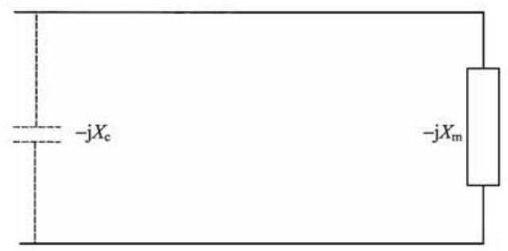
图 10.19 诠释谐振导致自激现象的简化等效电路
自激可以通过限制 PFC 电容器的容量来避免发生, 其中包含分布网络中的任何电容。也就是要 PFC 电容容量限制在由过速引起的各种可能频率下都不会引起共振的容量上，否则当孤岛效应发生时，所产生的电压就必须被检测到，并采取快速的过电压、变频保护来停机。
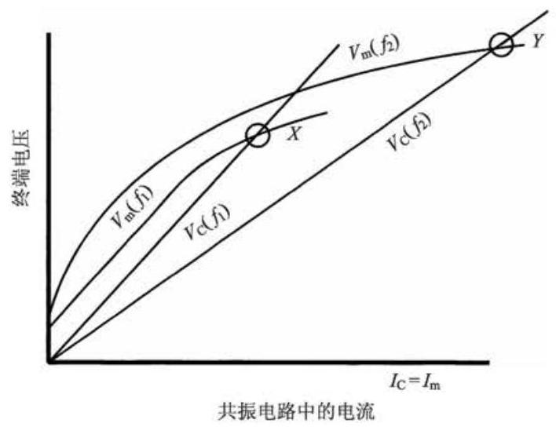
图10.20 频率 \({f}_{1}\) 和 \({f}_{2}\) 下的自激插图 ( \({I}_{\mathrm{C}}\) 为电容电流, \({I}_{\mathrm{m}}\) 为感应发电机的励磁阻抗电流)
10.8.3 风力发电机与配电网络之间的接口保护¶
- 8.1 节中考虑了风力机受绝缘失效以及随之引起短路电流影响的保护，这些保护主要是由配电网提供。但是保护还是要确保风电场不会将故障送入到电网或试图对电网中的独立部分进行供电。
图 10.21 说明了这个问题。对于电网故障, 问题在于风力机不是一个可靠的故障电流源, 所以断路器 B 不能靠过流保护来工作。因此, 对于所示的故障, 电网中的电流动作保护被用来断开断路器 A。这就会将由于风速存在使开始加速的风力机隔离出来，但它不可能再向电网输送能量。实际上，只要故障发生，并且在断路器 A 跳开之前，加速情况就会发生，因为故障使电网电压降低，所以抑制了能量的输出。断路器 B 靠高频继电器和欠 (过)压继电器来断开。高频继电器用于探测风力机旋转速度的增加，转速增加会进而引起输出频率的升高；欠 (过)压继电器通过监测电压的变化来检测和电网的连接已经被断开。为了减少误操作，低(高)频继电器和欠(过)压继电器通常设置有延时 (如 500ms) 功能。因此，在高风速下风力机会由于机械转速达到了叶轮转速的保护设定值而发生停机。
一旦发电机被隔离出来, 电压和频率敏感继电器就会相继发生动作, 在常规电力系统保护中, 这并不是一个好方法。然而, 感应发电机或电压源变流器的使用是别无选择的，所以这种方案还是会被风电场接受的。
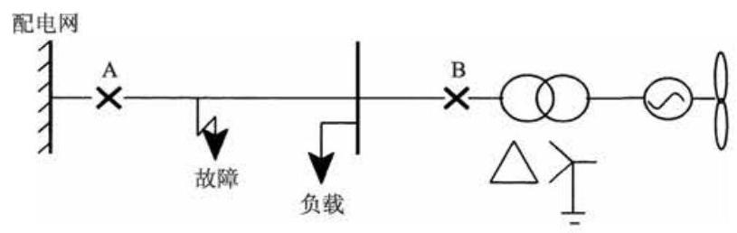
图 10.21 来自风力发电机的配电网保护
孤岛问题是风力机输出功率(包含有功功率和无功功率)准确匹配当地负荷的可能性。在这种情况下, 即使断路器 A 开路时风力机的电压和频率也不会有变化,所以断路器 \(\mathrm{B}\) 不会动作。大多数的配电网络对于可能发生的孤岛运行非常敏感，原因有以下几个方面:
(1)客户会得到超过电压和频率必要限制的电力供应的可能。
(2)部分电网可能会运行在没有足够中性点接地的方式下的可能。
(3)存在异相重合闸的危险。
(4)违反配电网管理运行的规定。
(5)对配电网操作人员具有潜在的危险。
从风电场运行人员的角度来看, 主要危险来自于异相重合闸。许多配电线路具有自动重合闸功能, 它允许线路, 特别是架空线路的瞬时故障在对用户没有造成长时间中断的情况下被切除。因此,断路器 \(\mathrm{A}\) 可以被设置为在故障后几秒钟内进行重合闸。如果断路器 \(\mathrm{B}\) 仍然闭合的话,由于电网电压不同相地接入风力机,就会引起非常大的电流和转矩。这就是为什么要进行快速孤岛保护的主要技术原因, 特别是对于风力发电机，发电机的输出功率和载荷的必须匹配是不可能保持任意长时间的。
为了设计出完善的监测孤岛的保护系统，人们进行了大量的努力。尽管如此， 根据重合原则，这项工作看起来还是非常困难的。因为如果没有电流流过断路器 A 的话，风力发电机与系统连接与否对网络来说不会产生任何差异。通常所使用的继电器是称为频率变化率装置和矢量变化的继电器，它们在孤岛效应发生时能检测电压矢量的跳变。这两种继电器依赖于断路器 A 中流过的电流，并且能够被设定不同的灵敏度。但是如果它们被设置得过于灵敏的话, 电力系统的外部扰动信号会使它们产生误动作 (如大型远程常规电站的误动作)。
如果图 10.22 中发生的不是相间故障而是单相对地故障, 那么问题就会变得更加复杂。这种类型的故障在架空线上尤其普遍。可以看出, 风力机变压器 (33 / 0.69kV)在高压侧是 \(\Delta\) 型绕组，它不容易接近中性点，并且没有接地。因此，在这种方式下没有接地电流的通道，所以原则上单相接地故障具有不确定性，并且没有电流流动。在实际中,会出现一些杂散电容电流,但这不足以导致传统的对地保护系统动作,但是会导致间歇性电弧。常规的解决方法是使用一种叫做中性点电压位移的继电器来检测出电路的一相已经接地, 这样就取代了中性线。这种方法的缺点是成本高，因为高压电路需要复杂(五柱式)的变压器。尽管对于大型风电场这是可以接受的,但是对于独立的小型风力发电机来说这项费用有时就很难接受了。
各个国家对接口保护的要求不同(CIGRE,1998;CIRED,1999)。有些国家喜欢使用远方跳闸，也就是当任何一个上级电网断路器切断时，这个动作就会传送到风电场断路器上并立即切断。尽管这为防止孤岛现象的发生提供了保证，但是由于需要与大量远程断路器的通信通道使实施远程跳闸花费巨大。应该提到的是, 在荷兰, 几乎所有的配电网都是地下的, 所以发生架空线路瞬时故障后不再需要自动重合闸，也没有误动作保护。在丹麦，使用了很多正序低压继电器，这在检测孤岛运行方面似乎很有效。毫无疑问，随着时间的推移，这些准则是会达成一致的， 但是在目前不同的国家还存在很大的差异。
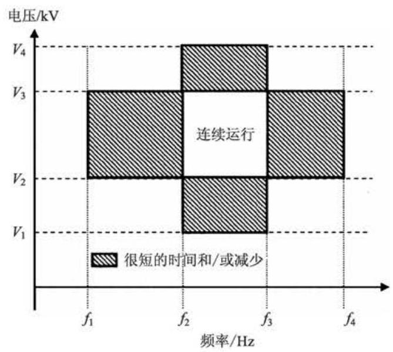
图 10.22 网络代码-连续运行。连续和短时间工作区域的典型形状 (Anaya-Lara, 2009)
10.9 分布式发电和电网标准¶
风电机组是独立地连接, 在小型发电厂为中压配电, 大型发电厂是高压配电和输电网。连接规则和性能按电力系统经营者的要求并取决于风电场的大小和它们所连接的电网的电压。
在英国，个别风电机组和小风电场连接到如 G59/1 规则下的配电网，发电机达到 \(5\mathrm{{MW}}\) 与 \({20}\mathrm{{kV}}\) (电网协会,1991) 及 IEEE 1547。在美国,发电机组达到 10MVA(IEEE,2003)。这些规则的原理是风力发电太小而不能对主要电力系统的频率产生显著影响。因此, 如果电力系统中有任何干扰或者如果电网中的部分孤立，则这些规则要求风电机组断开连接。当电网电压和频率超出正常工作范围时风力机会跳闸，并且不会重新连接直到电网恢复正常。电源保护的灵敏度缺失用来检测孤岛效应。
这些规则的推出反映了运营商为了避免出现孤立运行对配电网的重视以及为了确保不会出现重合闸的异相位, 电网的回馈部分可能存在安全隐患或运行不接地的系统。电力系统的稳定性是由大型中央发电机提供的, 并且这些规则约束下的风电机组运行必须受功率因数的控制, 从电网得到电压。实际电力控制没有要求,并且风电机组对保持系统频率没有作用。
相反, 较大型风电场遵循不同系列规则组, 称为电网标准。输电系统的运营商实施这些规定，并反映出他们很关注对主电源系统有重大影响的大型风电场。如果电力系统的电压和频率在正常范围以外, 此时的理念就不是断开连接了, 可能是由于系统故障或者大型发电机损耗, 风电场应该保持连接来支持电力系统。此外, 风电场需要有控制终端电压的设施并可以提供频率支持。这些风电场被认为大到足以通过其无功功率的输出和其产生的有功功率的电网频率影响输电系统电压。
在这两种不同方法下的风电场的大小和电压等级的变化反映出风力发电与传统发电系统的相对重要性。因此, GB 电网标准适用于苏格兰级别超过 50MW 的风电场,但在苏格兰部分地区为 \({10}\mathrm{{MW}}\) 。在美国,得克萨斯州大型风电场具有先进的配电电网规则, 而其他一些国家目前没有限制风力发电。由于风力机的持续增加, 电网规则可能会应用到较小型的风电场以确保它们有助于电力系统运行。然而,配电网的实际运行还需要进一步修正。
对于小型分布式发电接入，许多国家都有他们自己的国家标准，对于大型风电场来说,具备自身的电网标准。由于风力发电的重要性和其他形式的分布式发电有所增加, 这些标准也在不断修正, 所做的各种努力都是为了使得这些准则相互协调。
10.9.1 电网标准——持续运行¶
电网标准遵循用于大型水电和火电中央发电机连接的类似的要求。因此，它们不针对风电场中个别的风电机组, 而整个风电场的性能, 连接至输电网。
大型风电场必须能连续运行于电力系统所需要的频率和电压范围内, 在系统受到干扰时也不会跳闸。这样当输电网的电压和频率被干扰时,会确保它们能持续为电力系统提供电量。图 10.22 所示为大型风电场连接到高压网时的典型要求。电压和频率的精确值每个国家的都不同, 目前已记录的是英国和欧洲大陆主要系统频率下降的例子, 由于中央发电机或电路所造成的同时损耗, 导致系统频率下降，继电器敏感的频率、电压或功率变化以防止孤岛运行引发的分布式发电机的跳闸，使系统频率进一步下降。在一定范围内的频率和电压的持续运行能够确保大型风电场电力系统保持稳定。
10.9.2 电网标准——电压和功率因数控制¶
输电网的电压值主要由无功电流来决定。大型风电场要求可以控制它们的终端电压, 与输电网交换限定水平的无功电流。图 10.23 所示为典型要求。风电场是需要能够运行于输电系统运营商所指示区域内的任何地方。
原则上, 变速风电机组能够在电力电子设备额定范围内的任何功率因数下运行。事实上, 很难确保大型风电场输出的无功功率快速符合要求, 这是因为以下几点:
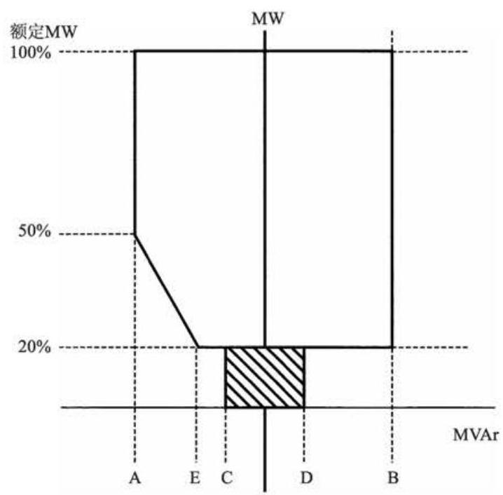
图 10.23 电网标准——电压和功率因数控制。电网连接的风电场的典型的无功功率需求 (国家电网公司,2008)。A点相当于(MVAr):超前 0.95MW 的额定输出功率因数;B点相当于 (MVAr): 滞后 0.95MW 的额定输出功率因数; C点相当于 (AVAr): -5%额定 MW 输出; D点相当于(AVAr): +5%额定 MW 输出;E点相当于(AVAr): -12%额定 MW 输出
(1)很难快速协调大量地理上分散的风电机组无功功率。
(2)风电场变压器产生的无功功率随着有功、无功功率传输而变化。
(3)如果指定了一个大的无功功率范围，风电机组的成本会增加。
因此，额外的无功补偿装置(如静止无功发生器)安装在风电场的电网连接点处，以协助满足电网标准要求是很常见的。
10.9.3 电网标准——频率响应¶
电力系统的频率是由实际发电和负载的瞬时平衡决定的。如果负载超出了发电量, 频率将会下降; 如果发电量超额, 则频率会上升。频率的变化率是由所有发电机的旋转惯性和连接到电力系统的旋转负载决定的。
因此，如果电力系统的频率上升，可能因为一个大的负载断连，风电机组必须降低其真实功率输出(图 10.24)。
为了给风电机组提供低频响应, 必须通过调节叶片桨距角或者以一个非最优旋转速度运行去卸载。有功功率控制有很多方法, 包括 delta 控制和梯度功率控制, 在风能 — 事实(欧洲风能协会, 2009)中进行了讨论。卸载运行的要求在很多电网标准中都有详细说明, 但是很少被电力系统的运营商查看, 因为这会导致风能被浪费。
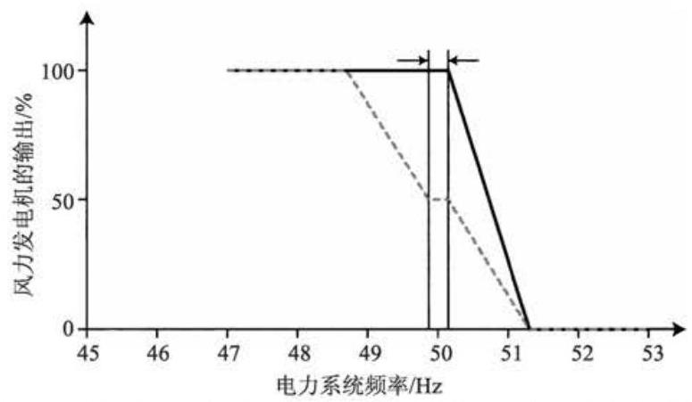
图 10.24 电网标准——频率响应:黑线代表高频响应，灰线代表卸载风力机
10.9.4 电网标准——故障穿越¶
输电网的短路故障导致电压在很宽的区域被压低。任何电力系统的故障是不可避免的, 如由于雷击, 电压的压低可能延伸数百公里。断路器将通过隔离故障部分电网在大约 100ms 清除传输故障, 从而恢复电网电压, 但是低压电网的故障需要更长的时间来清除。
电网故障可能导致电路的隔离和中央发电机的损耗, 并且此时风电场应该持续为电力系统提供能量。风电场在任意网络受到干扰时应该保持稳定和连接, 因此,需要表现出穿越由于短路故障导致的电压下降的能力。
任何发电机的功率能够将产生的电压和电流输出, 因此, 如果其终端电压下降, 发电机不能输出功率至电网中, 将会超速。储存的机械能作为发电机的旋转动能和原动力。当定速感应发电机的风电机组由于电网故障超速, 电压储存时, 将会吸收大量的无功功率导致电压进一步下降, 并可能出现电压不稳。
变速风电机组通过使转子转速增加, 能更好地穿越电压下降, 和一过性地输出功率出现降低。然而, 需要一个鲁棒控制系统来确保在电压下降时转换器与电网保持同步。
图 10.25 所示为持续运行风电场中电压时间包络波形。风电场必须承受 140ms 电压降至零，并且 \({1.2}\mathrm{s}\) 内降到 \({80}\%\) 。图中还示出了故障导致的电压下降的例子。在这个例子中，故障在 \({385}\mathrm{\;{ms}}\) 内被清除，并且风电场穿越此电网故障继续运行。
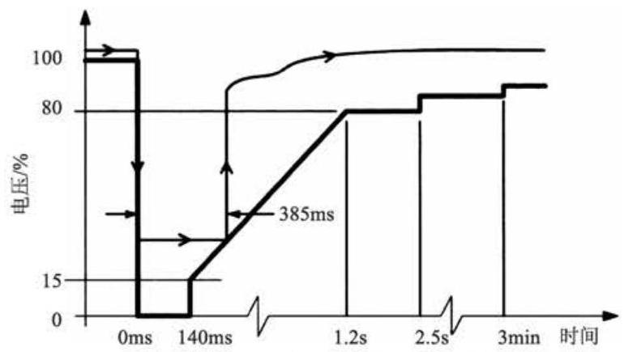
图 10.25 电网标准——故障穿越。典型故障穿越特性
10.9.5 合成惯性¶
传统的变速风电机组的控制系统不考虑电力系统频率。这个频率用于电网侧整流器电力电子开关的同步, 主控制回路用于测量发电机的旋转速度, 并应用于转矩中，以便风电机组能够遵循预先操作特性(图 6.18 和图 6.19)。因此，电力系统的频率下降可能因为大型中央发电机突然断连, 变速风电机组由于系统频率的降低将不会提供任何额外能量。这与常规的同步发电机或固定速度的感应发电机正好是相反的, 由于发电机旋转频率和速度下降导致其中一些动能传输至电力系统。
这种缺乏响应的变速风电机组系统频率的下降能够通过增加图 10.26 所示的额外的控制回路来克服。其惯性是通过测量系统频率的变化速度合成的。
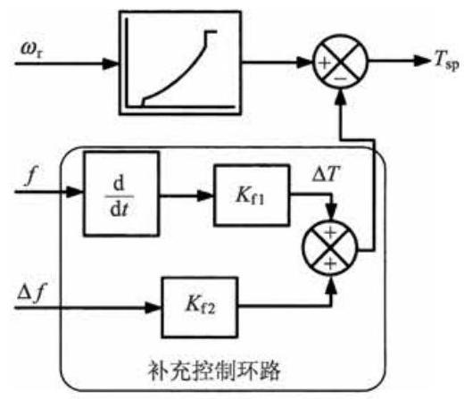
图 10.26 为一个变速风电机组 \({T}_{\mathrm{{sp}}}\) 提供合成惯性的附加控制环路是电力电子转换器的扭矩控制设定点 (Anaya-Lara, 2009)
10.10 风能与发电系统¶
全世界，大多数使用化石燃料、火力或核能驱动大型同步电机(达 1000MW 容量)产生电力。直到几年前，风能开始发电，但风力发电容量较小。它仅仅能降低这些发电机的电力负载, 而对发电系统的规划或运行没有显著影响。这种现象现在加速改变, 风能对发电系统的发展(计划) 和其运行变得越来越重要。
在很多国家, 电力系统已开放, 分为处理发电、电能零售、输电和配电的公司独立经营。开放的电力系统部分按照市场(发电和电能零售)的方式运行，而另一部分是自然垄断的 (输电和配电), 由国家调控来使消费者受益。尽管短期内发电方式和电能零售行为受到市场的影响, 但电力系统的基本操作仍保持不变, 市场和调控可被视为仅仅是为各种表现形式寻找最有效方式的一种机制。
10.10.1 容量信度¶
所有的发电系统(实际上的电力系统的各个方面)都设计有假设的故障率。所有的设备的零部件 (如发电机、变压器、架空线及电缆) 都有有限的故障率, 任何完全可靠的系统设计需要付出昂贵的代价。一般地, 负载超过有效发电量是可能的, 一般被定义为发电量的充裕性。在开放之前, 英国和威尔士的发电系统被设计成 0.09 的电力不足率(LOLP)，这意味着所期待的电力需求超过有效发电量平均 100 年有 9 次。0.09 的 LOLP 主要是英国和威尔士的煤炭发电系统，在 20 世纪 80 年代，他们需要的发电量计划冗余为 24% (即发电量超过峰值负载 24%)。法国所设计系统的负载预期损失 (LOLP) 为每年 3 小时，而爱尔兰的系统假定每年有 8 小时，需求量将超过发电量。北美 LOLP 为 0.1 或 LOLE 为 \({2.4}\mathrm{\;h}/\mathrm{y}\) 是比较常见的。类似的标准使用在其他发电设施上。
图 10.27 显示了定义的充足水平的规划原则。图中通过这些概率分布的交叉点显示了发电不足的风险。所有的发电机都可能由于故障导致无效的可能性, 然而风力发电不能发电的可能性高于火力发电，由于风速低或设备故障会导致其可能不发电。因此, 在发电组合中增加风能拓展分布式发电, 从而增加了发电量的计划冗余。
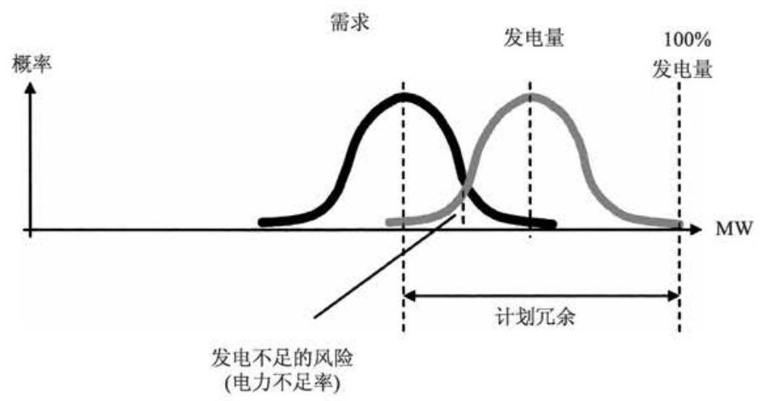
图 10.27 发电量的充裕性(Jenkins, Ekanayake 和 Strbac, 2010)
通过计算来确定一套电力系统的风力发电量, 其运行模式与火力发电机 (Billi-nton and Allan, 1996)是相似的, 除了传统发电机考虑的是两种状态之一 (有效或无效), 风电机组表现的是一系列的状态, 反映出在不同风速下发电的可能性。这些状态和相关概率用于构造中断容量概率, 可以计算有效发电的概率。风力发电持续性增加, 直到能够完全替代的传统发电电量。这种方法下的风能容量值是能够计算出来的。
风力发电量通常通过其容量信度 (Milligan 和 Parsons, 1999) 来描述, 具体被定义为由于传统发电厂的容量需求的下降, 使得风能被引入的可能性增大, 从而能够保持可靠的电力供应。传统发电容量的降低表现出传统的风能发电占到一定的百分比。总之, 风能的容量信度是通过发电系统发电充裕性的量化来评价的, 在这个标准的可靠性准则下 (如 LOLP 或 LOLE), 该发电系统中风电是可有可无的。
图 10.28 所示为英国电力系统中风能的容量信度是如何随着风能的占有率而变化的。可以看出，低占有率容量信度接近于风能容量系数，并随着占有率的增加而降低。地域多样性的优点明显地显示出来了, 风电场在不同地理位置相比于它们都位于同一地区产生更高的容量信度比。
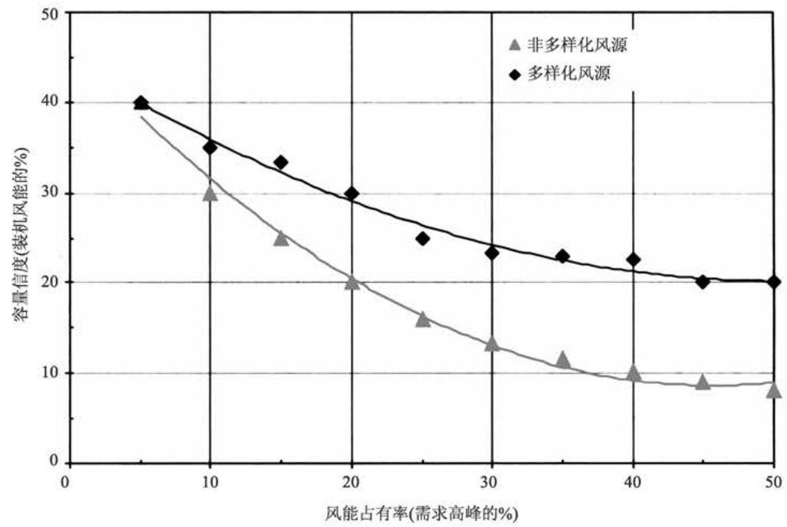
图 10.28 英国电力系统风能的容量信度与风能占有率(Jenkins, Ekanayake 和 Strbac, 2010)
10.10.2 风能预报¶
电力系统是通过实时平衡供需的关系来运行的。因此, 同正在建造的适当的发电量一样, 它的运行需要满足其负载。传统上称为单位承担, 是在限制范围内满足负载的发电机的最佳(最低成本或最低排放)选择。限制包括发电机运行上的限制(如火电机组的最小冲程时间)、电网限制(装载电路)以及保持充足储备的需求 (如部分装载的旋转发电机)。一旦与发电机连接的电网被选定, 其最经济的输出通过经济调度来决定。单独承担和经济调度通常一起被认为是发电调度。
在传统的垂直整合的电力系统中, 发电系统的调度是由系统操作员集中优化。 以市场为基础的系统中, 每家发电公司将会优化他们的发电机的投资组合, 目标是使其完成与电能零售商的合同。然而, 发电厂必须履行的原则经常为大型火电机组提前预热 \(8\mathrm{\;h}\) ，然后保持优化运行。
以最低成本 (或排放量) 满足需求为目标, 需求的计算也是很关键的。如果历史需求和相关因素, 如环境温度和电视节目一起考虑, 就能比较准确地预报出电力负载需求(往往在 3% 之内)。但是，引进大量的风能注入电力系统中可明显增加其他发电系统所需要的残余载荷的不确定性水平。因此, 风力发电输出的预报对电力系统的运行来说变得极其重要 (Boyle, 2009)。
风力发电输出的有效预报需要以下几点:
(1)发电机的调度及供需平衡的维持。
(2)确定需要的备用发电量，要么部分带载发电机或快速启动燃气轮机，这需要准确的预测。
(3)传输系统的有效运行管理繁忙的用电回路。
提前 \(4 \sim 6\mathrm{\;h}\) 的预报可能是基于测量数据 (风速或风电场电力输出) 通过分析以前的时间序列。目前, 已开发了很多技术并且在原来的基础上进行了适当的改进。 原有模型假定预报值与最后一次测量值相同。
所有的预测在相当长的一段时间内都是基于天气预报中的数值天气预报 (NWP)。全球的 NWP 模型是通过许多国家的气象服务来进行的。它们利用来自气象站和卫星的气象观测, 通过数值模型来预测地球大气层未来的状态。计算量相当大, 因此利用比较粗糙的网格结构。局部地区的 NWP 模型应作为全球模型的输入结果, 从而提供更高的分辨率, 但只覆盖地球的一部分。这些局部地区的预报可能是从国家气象服务购买的,并用其作为风力发电预报模型的一个输入 (图 10.29)。
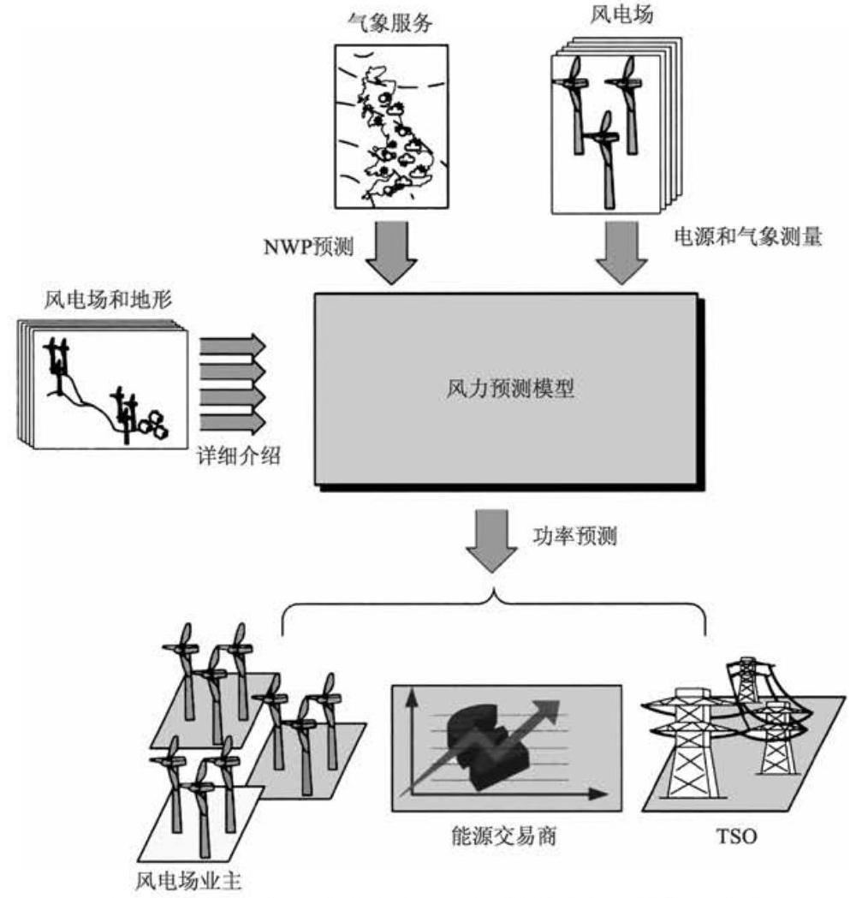
图 10.29 风电功率预测系统的信息流动 (福克斯等, 2007)
风速预报是由输电网中 20 平方千米内，48h 内每 8h 的当地 NWP 模型提供的。这些然后转换到(按比例缩减)风电场风力机的高度处。在平坦地区，这可能通过空间插值来完成，但是在更为复杂的地形处，需要利用一个中尺度模型。利用这个场址风速, 然后考虑到当地的地形以及风力机的尾流能量损耗, 风电场的输出就可以被建模出来。然后, 模式输出统计 (MOS) 通过将其输出与风电场的输出功率和风速测量进行比较来完善模型。
参考文献¶
AREVA (1987) Network protection and automation guide. AREVA http://www.areva-td.com
ANSI/IEEE (2000) IEEE Guide for safety in AC substation grounding. Standard 80.
Anaya-Lara et al. (2009) Wind Energy Generation; Modelling and Control. John Wiley & Sons, Ltd, Chichester.
Billinton, R. and Allan, R. (1996) Reliability Evaluation of Power Systems, 2nd edition. Plenum Press, New York.
Bossanyi, E., Saad-Saoud, Z. and Jenkins, N. (1998) Prediction of flicker caused by wind turbines, Wind Energy 1(1), 35-50.
Boyle, G. (ed.) (2009) Renewable Electricity and the Grid, the Challenge of Variability. Earthscan, London.
British Standard (2007) Voltage characteristics of electricity supplied by public distribution systems. BS EN 50160.
Copper Development Association (1997) Earthing practice. CDA Publication No 119. Copper Development Association, Potters Bar. http://www.copperinfo.co.uk
Cotton, I. et al. (2000) Lightning protection for wind turbines. In: International Conference on Lightning Protection, pp. 848-853.
Dugan, R.C., McGranaghan, M.F. and Beaty, H.W. (1996) Electrical Power Systems Quality. McGraw-Hill, New York.
Electricity Networks Association (1989) Planning limits for voltage fluctuations caused by industrial, commercial and domestic equipment in the UK. Engineering Recommendation P. 28.
Electricity Networks Association (1990) Planning limits for voltage unbalance in the UK for \({132}\mathrm{{kV}}\) and below. Engineering Recommendation P. 29.
Electricity Networks Association (1991) Recommendations for the connection of embedded generation to the public electricity suppliers distribution networks. Engineering Recommendation G59/1.
Electricity Networks Association (2005) Limits for harmonics in the UK electricity supply system. Engineering Recommendation G5/4-1.
European Wind Energy Association (2009) Wind Energy - The Facts. Earthscan, London.
Fox, B. et al. (2007) Wind Power Integration, Connection and System Operational Aspects. Institution of Engineering and Technology, London.
Gardner, P. (1996) Experience of wind farm electrical issues in Europe and further afield. In: Proceedings of the 18th British Wind Energy Association Conference, pp. 59-64. Mechanical Engineering Publications, Bury St Edmunds.
Heier, S. (2006) Grid Integration of Wind Energy Conversion Systems, 2nd edition . John Wiley & Sons, Ltd, Chichester.
Hindmarsh, J. (1984) Electrical Machines and Their Application. Butterworth Heinemann, London.
IEEE (1991) IEEE Recommended practice for the electrical design and operation of windfarm generating stations. IEEE Std. 1094, (now withdrawn).
IEC 60909-0:2001 (or BS EN 60909-0:2001) Short circuit current calculation in three-phase a.c. systems. International Electromechanical Commission and/or British Standards Institution.
IEEE 1547 (2003) IEEE Standard for Interconnecting Distributed Resources with Electric Power Systems.
IEC (2008) Electromagnetic compatibility (EMC) - Part 4: Testing and measurement techniques - Section 15: Flickermeter - Functional and design specifications. IEC 614000-4-15.
IEC (2008) Measurements and assessment of power quality characteristics of grid connected wind turbines. IEC 61400-21; 2001
IEC (2010) Lightning protection for wind turbines. IEC 61400-24.
Jenkins, N., Ekanayake, J.B. and Strbac, G., (2010) Distributed Generation. Institution of Engineering and Technology, London.
Kanellos, F.D. and Kabouris, J. (2009) Wind farm modeling for short-circuit level calculations in large power systems IEEE Transaction on Power Delivery. 24(3), 1687-1695.
Lakervi, E. and Holmes, E.J. (1995) Electricity Distribution Network Design, 2nd edition. Peter Peregrinus, Bristol.
McPherson, G. (1990) An Introduction to Electrical Machines and Transformers, 2nd Edition. John Wiley & Sons, Inc. New York.
Milligan, M. and Parsons, B. (1999) A comparison and case study of capacity credit algorithms for wind power plants. Wind Engineering, 23(3), 159-166.
Mohan, N., Underland, T.M. and Robbins, W.P. (2003) Power Electronics: Converters, Applications, and Design, John Wiley Sons, Inc. New York.
Morren, J. and de Haan (2007) Short-circuit current of wind turbines with doubly-fed induction generator, IEEE Transaction on Energy Conversion, 22(1), 174-180.
National Grid Company plc (2008) The Grid Code, Issue 3, Revision 25, 1 February.
Tagg, G.F. (1964) Earth Resistances. George Newnes Ltd, London.
Tande, J.O.G. (2003) Grid integration of wind farms, Wind Energy, 6(3), 281-296.
Tande J.O.G. Power quality. (2005) In: T. Ackerman, Wind Power in Power Systems, John Wiley & Sons, Ltd, Chichester.
Thomson, M. (2000) Automatic voltage control relays and embedded generation. IEE Power Engineering Journal, 14(2), 71-76.
Wagner, C.F. and Evans, R.D. (1933) Symmetrical Components. McGraw-Hill, New York.
Weedy, B. and Cory, B. (1998) Electric Power Systems, 4th edition. John Wiley & Sons, Ltd, Chichester.
附录 C 风力发电机组之间连接的 简单运算¶
C.1 标幺制¶
标幺制,简单来说,就是电力工程师用来将所有数值表达为一个比率形式的简单的计算方法, 即
(1)实际值(任何单位)。
(2)基值或参考值(同一单位)。
这种方法的优点包括以下几个方面:①在运算中出现数值 3 的频率降低；②相似的标幺值可以应用于不同容量的系统中；③通过仔细选择电压基值，含有多个变压器的电网解决方法变得简单。
对于简单的运算, 如在简单配电网中需要对风电场进行评估, 则所做的步骤如下:
(1)任意假设一个基准值 VA(如 \({10}\mathrm{{MV}} \cdot \mathrm{A}\) )。
(2)选择电网中各电压等级的电压基准值(如 \({33}\mathrm{{kV}}\) 和 \({11}\mathrm{{kV}}\) )。这些电压基准值应该与变压器的实际匝数比相关。
(3)计算发电机终端的有功和无功潮流，作为标幺值(即对于一个 \(5\mathrm{{MW}}\) 的潮流,基值选择为 \({10}\mathrm{{MV}} \cdot \mathrm{A}\) ,标幺值为 \(P = 5/{10} = {0.5}\) 。类似地,对于一个 \(1\mathrm{{Mvar}}\) 的无功潮流，标幺值为 \(Q = 1/{10} = {0.1}\) )。
(4)如果需要的话，利用基准阻抗 \({Z}_{\text{ base }} = {V}_{\text{ base }}^{2}/V{A}_{\text{ base }}\) 将电路的阻抗从欧姆转化为标幺值。
(5)在各电压等级处的基准电流可以从下式中获得: \({I}_{\text{ base }} = V{A}_{\text{ base }}/\sqrt{3}\) × \({V}_{\text{ base }}\) 。
C.2 潮流、缓慢电压波动和电网损耗¶
如果从分布式风力发电机组输出的电能被临近的负荷吸收，那么对配电网电压和电网损耗的影响就很可能是有益的。但是, 如果必须通过配电网进行传输, 那么可能会增加电网损耗, 缓慢电压波动也可能会频繁发生 (Jenkins, Ekanayake 和 Strbac, 2010)。
如果风力发电机组运行于单位功率因数 (即无功功率 \(Q = 0\) ),则轻型负荷放射状电路(图 C. 1)上的电压波动可以近似为
在超前功率因数运行下的发电机 (吸收无功功率) 可以降低压升, 但是会造成电网损耗的增加。在这种情况下, 压升为
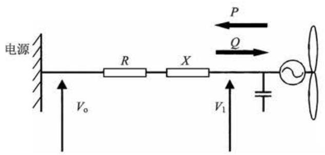
图 C. 1 放射状电路上的定速风电机组
特别地, \({11}\mathrm{{kV}}\) 架空线路的源阻抗,其感性阻抗与电阻的比率 \(\left( {X/R}\right)\) 为 2 。额定输出的无补偿感应发电机的超前功率因数一般为 0.89,即 \(P = - {2Q}\) 。因此,在这些条件下,全功率下的电路中没有明显的压升。但线路中的有功功率损耗 \(\left( W\right)\) 可以近似为
发电机吸收的无功功率可以限制电压上升,但也会增加电路中的有功损耗。
式(C. 1) 一式(C. 3) 只是电压上升和电路损耗的近似等式, 并且不能用于重负荷的情况。对于在任何放射状电路中的压升来说, 可以通过运用下面介绍的迭代方法进行简单但是精确的运算。
在图 C. 9 所示的发电机母线上,视在功率 (有时也称作复功率) \({\mathbf{S}}_{1}\) 为
对于运行在滞后功率因数下的发电机,输出 VArs,则 \({\mathbf{S}}_{1}\) 为 \({\mathbf{S}}_{1} = P + \mathrm{j}Q\) 。
定义 \(\mathbf{S} = \mathbf{V}{\mathbf{I}}^{ * }\) ,这里 * 表示复共轭,因此,电路中的电流为
电路中的压升用 \(\mathbf{{IZ}}\) 表示,则有
通常,电网电压 \({\mathbf{V}}_{0}\) 是已知的,而发电机母线电压 \({\mathbf{V}}_{1}\) 则常为所求的值。 \({\mathbf{V}}_{1}\) 可以从下面的简单迭代表达式中得到:
式中, \(n\) 为迭代次数。
这是传统的 Gauss-Seidel 负荷潮流算法的简单形式 (Weedy and Cory,1998)。 当运算收敛时就可以得到一个精确的解。较复杂的负荷潮流算法可以通过商业化软件来进行计算。这包含带负载抽头变换开关的变压器模型, 运用更先进的算法只需少数迭代运算即可解决大型互联电路问题。
例 放射状线路中的压升计算。
如图 C. 2 所示,考虑运行于超前功率因数为 0.98 的 \(5\mathrm{{MW}}\) 风电场。以 \({10}\mathrm{{MV}} \cdot \mathrm{A}\) 为基准,电网电压 \({\mathbf{V}}_{0}\) 标幺值为 \(\left( {1 + \mathrm{j}0}\right)\) ,而电路阻抗 \(\mathbf{Z}\) 标幺值为 \(\left( {{0.05} + \mathrm{j}{0.1}}\right)\) 。
超前功率因数为 0.98 , 这就意味着吸收的无功功率为 1.01 Mvar。
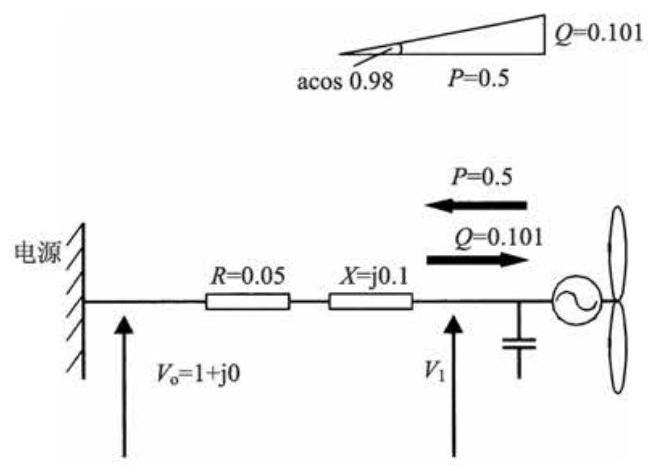
图 C. 2 放射状电路上的压升计算实例(每单位中的所有值)
因此, 根据式 (C. 7), 则有
对于第一次迭代 \(\left( {n = 0}\right)\) ,假定 \({\mathbf{V}}_{1}^{*\left( 0\right) } = 1 + \mathrm{j}0\) ,则 \({\mathbf{V}}_{1}^{\left( 1\right) }\) 可以表示为
对于第二次迭代 \(\left( {n = 1}\right)\) ,
则 \({\mathbf{V}}_{1}^{\left( 2\right) } = {1.0117} + \mathrm{j}{0.0549}\) 。
对于第三次迭代 \(\left( {n = 2}\right)\) ,
则 \({\mathbf{V}}_{1}^{\left( 3\right) } = {1.0117} + \mathrm{j}{0.0551}\) 。
计算过程已经收敛。
因此,在 \({3}^{ \circ }\) 角处 \({\mathbf{V}}_{1} = {1.013}\) 时,也就是说,发电机终端处的电压比电源处高 \({1.3}\%\) ,两个电压向量之间的夹角很小 (仅为 \({3}^{ \circ }\) )。
近似运算 \(\left( {{V}_{1} = {V}_{0} + \mathrm{{PR}} - \mathrm{{XQ}}}\right)\) 表明电压 \({V}_{1}\) 的标幺值为 1.015 (即 \({1.5}\%\) 的升高)。
线路中电流 \(\mathbf{I}\) 的标幺值可以从下式中获得:
若连接电压为 \({33}\mathrm{{kV}}\) ,则基准电流为
因此, \({33}\mathrm{{kV}}\) 线路中流动的电流幅值为 \({44}\mathrm{\;A}\) 。
线路中的有功功率损耗标幺值 \(\left( W\right)\) 为
在发电机连接点之前, 发电机处对称短路容量可以简化为
一旦风电场的感应发电机连接到电网上,它们对短路电流的作用可以从断路器中看出，因为断路器离故障点很近。典型值约为发电机额定值的 5 倍，在本例中为 \({25}\mathrm{{MV}} \cdot \mathrm{A}\) 。但是，对于三相对称故障来说，感应发电机产生的故障电流衰减很快, 其对故障电流的作用也变得越来越小, 而故障电流必须通过打开断路器才能被切断。关于故障电流计算的详细指南, 包括感应发电机所起的作用见 IEC 60909。